Kinematics: Motion in One Dimension
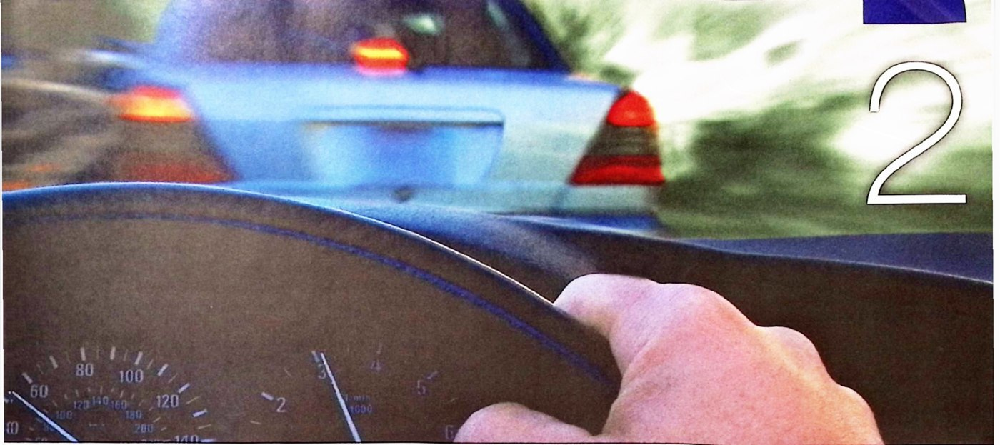
When you drive, you are supposed to follow the three-second tailgating rule. When
the car in front of you passes a sign at the side of the road, your car should be far
enough behind it that it takes you 3 s to reach the same sign. In this chapter, we will
learn the physics behind the three-second rule.
SCIENTISTS OFTEN ASK questions about things that most people accept as
“just the way it is.” For example, in the northern hemisphere, there are more hours of daylight in June than in December, whereas in the southern hemisphere, the opposite is true. Scientists want explanations for such simple phenomena. In this chapter, we will learn to describe a phenomenon that we encounter every day but rarely question—motion.
• What is a safe following distance
between your car and the car in front
of you?
• Can you be moving and not moving at
the same time?
• Why do physicists say that an object
thrown upward is falling?
BE SURE YOU KNOW HOW TO: • Decide when an object can be modeled as a point-like object (Section 1.2). • Use significant digits in calculations (Section 1.3).
2.1 What is motion?
(a)
An observer in a spaceship sees the person on Earth as rotating under a stationary Sun. Reference frames
Modeling motion
Imagine you are a passenger in a car. You see your friend standing on the sidewalk and wave at her, turning your head to look at her while driving past her. She too turns her head as she waves back. We turn our heads to follow a moving object, so it is not sur prising that your friend turns her head—you are in a moving car. But why do you turn your head? After all, your friend is standing still on the sidewalk. However, from your perspective, she is moving away from you. This example helps us understand a very important idea: different observers see the same motion differently. In other words, motion is relative to the observer, the person who is describing the motion. So who is moving in this scenario, you or your friend? The answer is that it depends on who is the observer. The driver of your car, for example, sees you (a passenger in the car) as not moving. This example shows us that when describing motion we need to specify both the object whose motion we are describing (the object of interest) and the person who is doing the describing (the observer).
Motion is a change in an object’s position relative to a given observer during a certain time interval. Without identifying the observer, it is impossible to say whether the object of interest moved. Physicists say motion is relative, meaning that the motion of any object of interest depends on the point of view of the observer.
An observer on Earth sees the Sun move in an arc across the sky. What makes the idea of relative motion confusing at first is that people intuitively use Earth as the object of reference—the object with respect to which they describe motion. If an object does not move with respect to Earth, many people would say that the object is not moving. That is why it took scientists thousands of years to understand why Earth has days and nights. An observer on Earth uses Earth as the object of refer ence and sees the Sun moving in an arc across the sky (Figure 2.1a). An observer on a distant spaceship, however, sees Earth rotating on its axis so that different parts of its surface face the Sun at different times (Figure 2.1b).
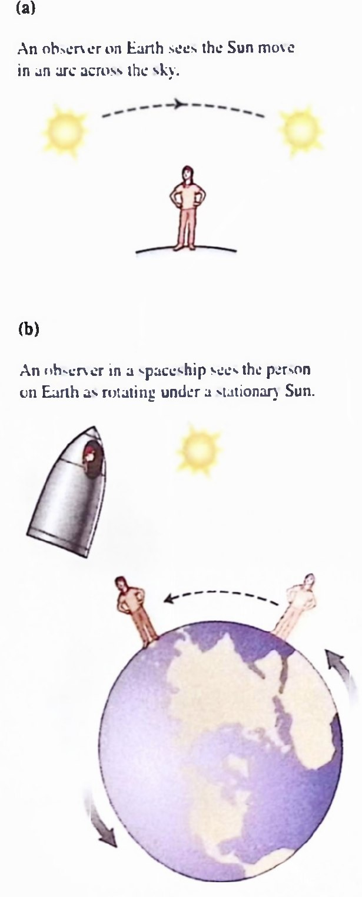
Specifying the observer before describing the motion of an object of interest is an extremely important part of constructing what physicists call a reference frame. A reference frame includes an object of reference, a coordinate system with a scale for measuring distances, and a clock to measure time. If the object of reference is large and cannot be considered a point-like object, it is important to specify where on the object of reference the origin of the coordinate system is placed. For example, if you want to describe the motion of a bicyclist and choose your object of reference to be Earth, you place the origin of the coordinate system at Earth’s surface, not its center.
When we model objects, we make simplified assumptions in order to analyze com plicated situations. Just as we simplified an object to model it as a point-like object in Chapter 1, we can also simplify a process involving motion. What is the simplest way an object can move? Imagine that you haven’t ridden a bike in a while. You probably wouldn’t start by attempting a turn; instead, you would ride in a straight line. This kind of motion is called linear motion or one-dimensional motion.
Linear motion is a model of motion that assumes that an object, considered as a point-like object, moves along a straight line.
For example, suppose we want to model a car’s motion along a straight stretch of highway. We can assume that the car is a point-like object (it is small compared to the length of the highway) and the motion is linear motion (the highway is long and straight).
2.2 A conceptual description of motion
To describe linear motion more precisely, we start by devising a visual representa tion. Consider Observational Experiment Table 2.1, in which a bowling ball rolls on a smooth floor.
I Observational experiment
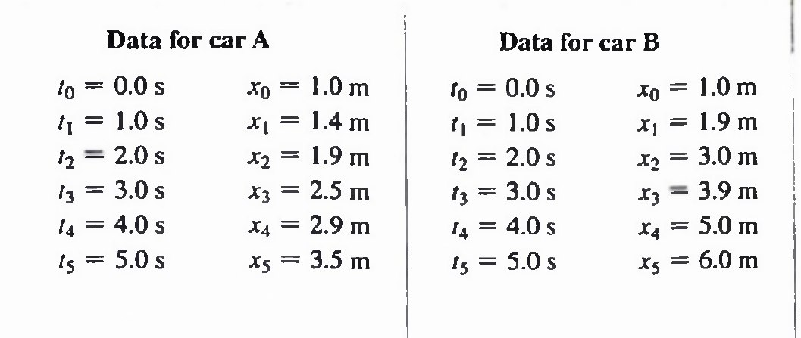
Experiment 1. You push a bowling ball (the object of interest) and let it roll on a smooth linoleum floor. Each second, you place a beanbag beside the bowling ball. The beanbags are evenly spaced.
Experiment 2. You repeat Experiment 1, but you push the ball harder before you let it roll. The beanbags are farther apart but are still evenly spaced.
Experiment 3. You push the bowling ball and let it roll on a carpeted floor instead of a linoleum floor. The distance between the beanbags decreases as the ball rolls.
Experiment 4. You roll the ball on the linoleum floor and gently and continually push on it with a board. The distance between the bean bags increases as the pushed ball rolls.
• The spacing of the dots allows us to visualize the motion of the object of interest. • When the object travels without speeding up or slowing down, the dots are evenly spaced. • When the object slows down, the dots get closer together. • When the object moves faster and faster, the dots get farther apart.
Motion diagrams
In the experiments in Table 2.1, we used beanbags as an approximate record of where the ball was located as time passed to help us visualize the motion of the ball. Let’s now use blinking LEDs to help us more precisely visualize motion, this time of
Analysis
The dots in this diagram represent the positions of the beanbags you placed each second as the bowling ball slowly rolled on the floor.
The dots in this diagram represent the positions of the beanbags, which are still evenly spaced but separated by a greater distance than the bags in Experiment 1.
The dots in this diagram represent the decreasing distance between the beanbags as the ball rolls on the carpet.
The dots in this diagram represent the increasing distance between beanbags as the ball is continually pushed across the linoleum floor.
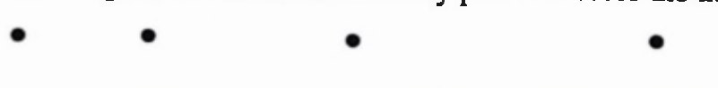
Pattern
Velocity change arrows
vectors v⃗₂ + Δv⃗₂₃ and v⃗₃ are equal:
a cart. Figure 2.2a shows a cart with an attached blinking LED (on for 31 ms, then off for 31 ms). Figure 2.2b is a long-exposure photo of the cart as it is moving on a hori zontal surface at steady speed, similar to the situation in Experiment 1 of Table 2.1. In Figure 2.2c, the cart is moving faster. Next, in Figure 2.2d, the moving cart is being pushed in the direction opposite to its motion until it stops. In Figure 2.2e, the cart is being pushed from rest and moves faster and faster. As you can see, the light traces in the four photos clearly illustrate the different types of motion of the cart. The same-length light traces in Figure 2.2b indicate that the cart moved the same distance each time the LED light was on (that is, was traveling at a steady speed), while the longer traces of Figure 2.2c show that the cart covered a longer distance during each light blink. In Figure 2.2d, the traces get shorter as the cart was slowing down and turn into a point when the cart stopped. In Figure 2.2e, the traces get longer as the cart was speeding up. These LED photos help us construct a new representation of motion that has more information than the dot diagrams: this representation is called a motion diagram. We draw dots to represent the positions of the cart and, instead of the traces of light, we draw arrows to indicate the cart’s direction of motion. The length of each arrow shows how fast the cart was moving at the location of that dot. These arrows are called velocity arrows. Figure 2.3 shows different types of motion represented with dots and velocity arrows. Notice the small arrow above each letter v (for velocity) in the figures. The arrow indicates that this characteristic of motion has a direction as well as a magnitude. Remember from Chapter 1 that such quantities are called vector quantities.
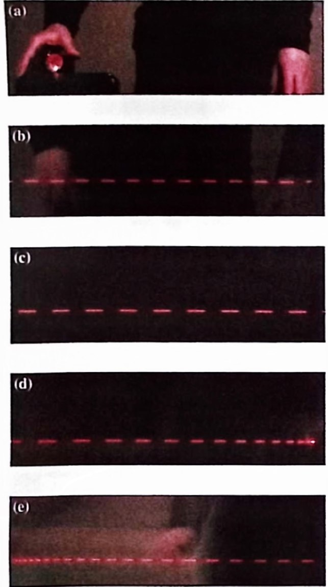
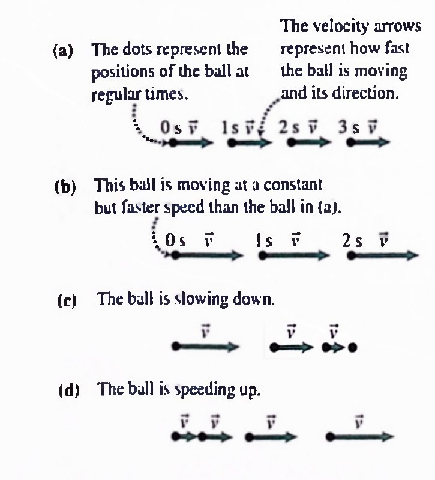
In Experiment 4 in Table 2.1 the bowling ball was moving increasingly faster while being pushed. The velocity arrows in the motion diagram in Figure 2.3d thus are increas ingly longer. We can represent this change by drawing a velocity change (Av) arrow. The A (delta) means a change in whatever quantity follows the A, a change in v in this case. The Av doesn’t tell us the exact increase or decrease in the velocity; it only indicates a qualitative difference between the velocities at two adjacent points in the
Note that if we move v⃗₂ to the other side of the equation, then
Thus, A v23 is the difference of the third velocity arrow and the second velocity arrow— the change in velocity between position 2 and position 3.
Making a complete motion diagram
We now place the Av arrows above and between the dots in our diagrams where the velocity change occurred (see Figure 2.5a). The dots in these more detailed motion diagrams indicate the object’s position at equal time intervals; velocity arrows and velocity change arrows are also included. A Av arrow points in the same direction as the v arrows when the object is speeding up; the Av arrow points in the opposite direction of the v arrows when the object is slowing down. When velocity changes by the same amount during each consecutive time interval, the Av arrows for each interval are the same length. In such cases we need only one Av arrow for the entire motion diagram (see Figure 2.5b). Physics Tool Box 2.1 summarizes the procedure for constructing a motion diagram. Notice that in the experiment represented in this diagram, the object is moving from right to left and slowing down.
Driving in the city
A car at rest at a traffic light starts moving faster and faster when the light turns green. The car reaches the speed limit in 4 s, continues at the speed limit for 3 s, then, approaching a second, red, traffic light, slows down and stops in 2 s. At the light, the car waits for 1 s until it turns green. Meanwhile, a cyclist approaching the first green light keeps moving without slowing down or speeding up. She reaches the second stoplight just as it turns green. Draw a motion diagram for the car and another for the bicycle as seen by an observer on the ground. If you place one diagram below the other, it will be easier to compare them.
"T" I D When drawing a motion diagram, I I I always specify the position of the observer.
Sketch and translate Visualize the motion for the car and for the bicycle as seen by the observer on the ground. The car and the bicycle are our objects of interest. The motion of the car has four distinct parts:
1. starting at rest and moving faster and faster for 4 s; 2. moving at a constant rate for 3 s; 3. slowing down to a stop for 2 s; and 4. sitting at rest for 1 s. (CONTINUED)
Show answer
See the figure at left. The balls are side by side only at time 0 — the first dot for each ball. It looks like they are side by side when at the 2-m position, but the slower ball is at the 2-m position at 2 s and the faster ball is there at 1 s. Similar reasoning applies for the 4-m positions — the balls reach that point at different times.
exercise?
The bicycle moves at a constant rate with respect to
the ground for the entire time.
Simplify and diagram We model the car and the bicycle as point-like objects (dots). In each motion diagram, there are 11 dots, one for each second of time (including one for time 0). The last two dots for the car are on top of each other since the car is at rest from time = 9 s to time = 10 s. The dots for the bicycle are evenly spaced.
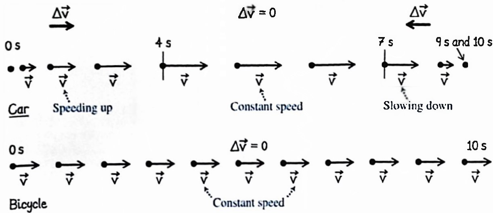
10 S
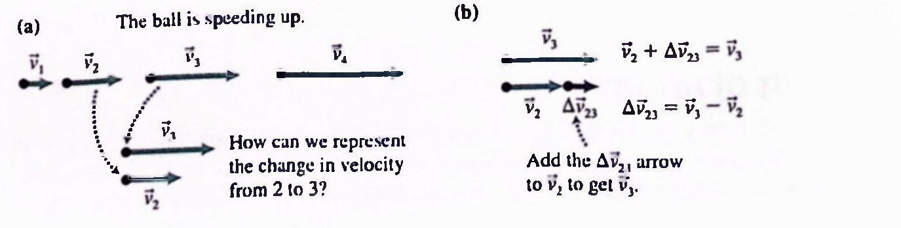
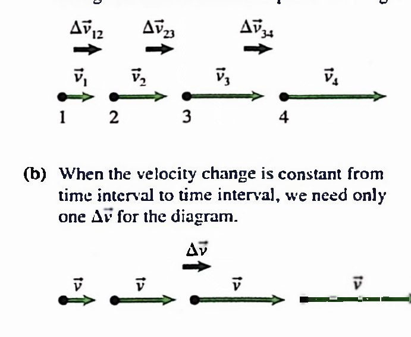
2.3 Operations with vectors
—A has the same length as A but points in the opposite direction. Now that we know how to move vectors around and draw the negative of a vector, we can explore how to add and subtract vectors. What rules of vector addition and subtraction can you infer by analyzing the examples shown in Figure 2.6b (addition, A + B) and Figure 2.6c (subtraction, A — B)1 Spend a few moments thinking about this before reading the following explanation of the rules.
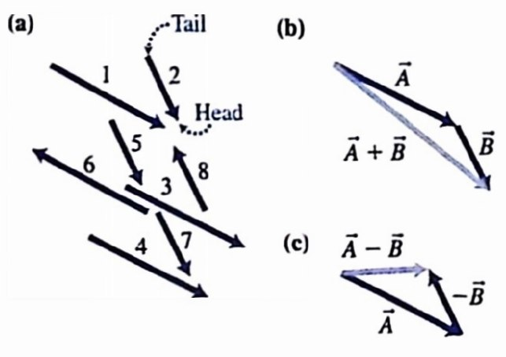
Physics Tool Box 2.1 tells you to determine the direction of a Av arrow on a mo tion diagram. To do this, you need to know either how to add vectors (the operation v2 + Av 23 = v3 in Figure 2.4) or how to subtract them (the operation Av23 = v3 — v2 in Figure 2.4). Here we discuss these operations in more detail. To start, we first con sider more simple vector operations. Carefully examine Figure 2.6, which shows eight arrows of different lengths and directions representing vectors. The length of each arrow is the vector’s magnitude, in any units you choose, and the orientation of each vector is determined by the direction of the arrow. Each vector has a tail (the point where it originates) and a head (the tip of the arrow). Which arrows represent the same vector? You see that arrows 1, 3, and 4 have the same length and the same direction: they therefore represent the same vector, A. Arrows 2,5, and 7 represent a different vec tor, vector B. From this exercise we see that moving the vector parallel to itself will not change the vector. What about arrows 6 and 8? They have the same length as A and B, respectively, but they point in the opposite directions. In this case, we say that vector 6 is —A, the negative of vector A, and vector 8 is — B. The minus sign is used to mean that
Adding vectors
Suppose we want to graphically add the two vectors K and L shown in Figure 2.7a. We can move a vector from one location to another as long as we do not change its magnitude or direction; therefore, we can place the tail of vector L at the head of K, as shown in Figure 2.7b, without changing L. Next, we draw another vector R from the tail of K to the head of L, as shown in Figure 2.7c, to represent the result of the addition of the vectors K and L. We can write the resultant vector (vector sum) as a mathematical equation: R = K + L. As you can see in Figure 2.7c, the magnitude of the vector sum is not in general equal to the sum of the magnitudes of K and L. However, there are two special cases, as Figure 2.7d shows:
• When two vectors are parallel and point in the same direction, the addition is much easier: the magnitude of the resultant vector equals the sum of the magnitudes of the vectors being added. • When two vectors are parallel but point in opposite directions (called antiparallel), the magnitude of the resultant vector equals the absolute value of the difference in the magnitudes of the vectors being added.
If you need to add more vectors, follow the same procedure of “tail to head” for all of them, and then draw the resultant vector. For accurate results in graphical addition, draw carefully using a ruler and a protractor.
(c)
Subtracting vectors
Suppose we now want to subtract vector P from vector M, shown in Figure 2.8a. You can interpret the operation of subtracting vector P from vector M as the addition of vector — P and vector M. The vector equation \sQ — M — P = M+ (—P). As Fig ure 2.8 shows, we therefore need to draw the vector — P first, and then proceed with graphical vector addition of — P and M. Figure 2.8e shows the subtraction of parallel and antiparallel vectors. This part is relevant to determining the direction and magni tude of the Av vector on a motion diagram.
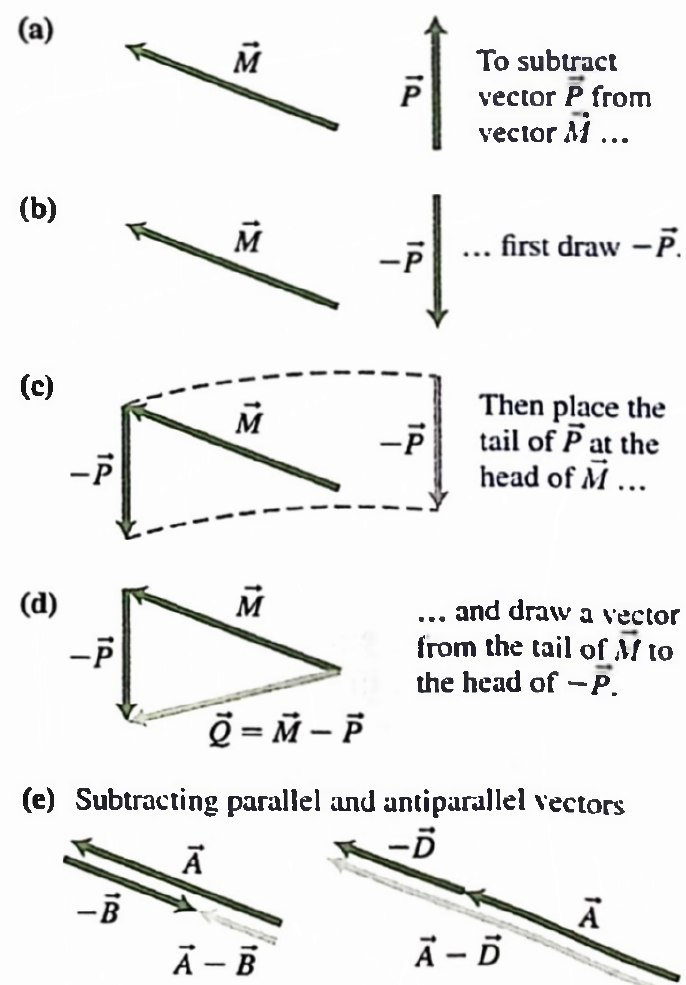
To subtract vector P_from vector M...
... and draw a vector from the tail of M to the head of — p.
(e) Subtracting parallel and antiparallel vectors
Multiple ways to build vector X
Vector X is 3 cm long and points west, (a) Draw three different com binations of two vectors whose addition gives vector X. One of the combinations should have antiparallel vectors, (b) Draw three different combinations of two vectors whose subtraction gives vector X. One of the combinations should have parallel vectors.
Sketch and translate (a) We draw vector X and think of possible combinations of two vectors that we can add to get X. Using the method for graphical addition, we know that the sum X must span from the tail of one vector to the head of the other when the two vectors are placed head to tail. The figure below shows three possible combinations. H and X are antiparallel vectors whose sum is X.
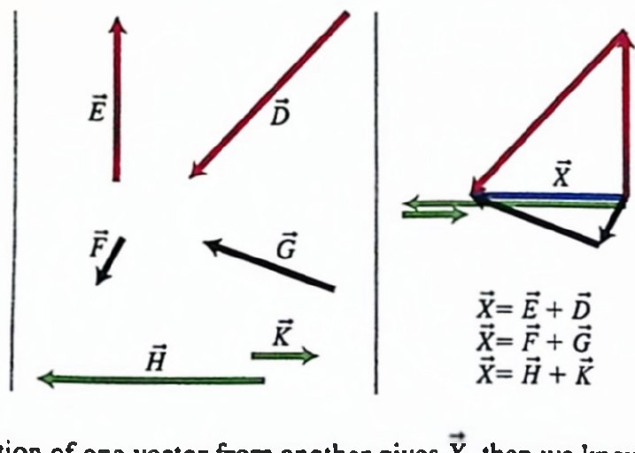
(b) If the subtraction of one vector from another gives X, then we know that the first vector plus X gives the second vector. We can therefore
draw any vector for the first vector and then add X to it to get die second vector. The figure below shows three possible combinations. L and M
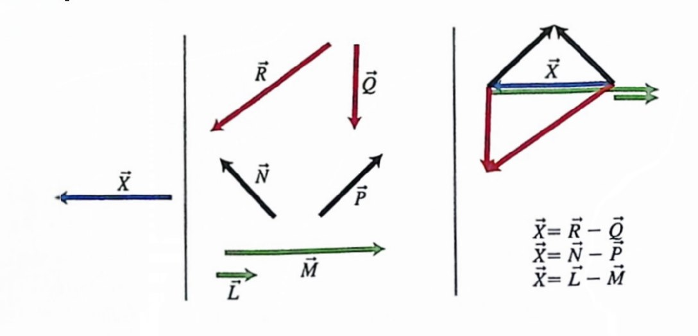
are parallel vectors whose difference is X.
Show answer
The velocity arrow v⃗3 is a vector that is the sum of the two vectors v⃗2 and Δv⃗23: v⃗3 = v⃗2 + Δv⃗23; the velocity change arrow is a vector Δv⃗23 that is the result of subtraction of vector v⃗2 from vector v⃗3: Δv⃗23 = v⃗3 − v⃗2.
In addition to vector addition and subtraction, there is another operation with vectors that you will need when studying physics. It involves multiplying a vector by a positive or a negative number (a scalar quantity)—for example, finding vector 2C when vector C is known. Figure 2.9a shows the result of this operation. Vector 2C is twice as long as C, or equal to the sum of two C vectors, and points in the same direction. Vector 3C is three times as long, or equal to the sum of three C vectors, and points in the same direction. Figure 2.9b shows the result of dividing vector D by 2 and by 3. We see that the result is equal to multiplying vector D by 1/2 and 1/3, respectively (the vector is one-half or one-third of the length of vector D). Finally, if you need to multiply vector C by a negative number, for example —2 or —3, you need to first draw vector — C, as we learned above, and then multiply it by 2 or 3 (Figure 2.9c). In general, when you multiply a vector by a scalar, the result is a vector parallel or antiparallel to the original vector whose magnitude equals the product of the magnitude of the orig inal vector and the magnitude of the scalar. [Note that if the scalar in this operation has units, the resulting vector has units that are the product of the original vector units and the units of the scalar.]
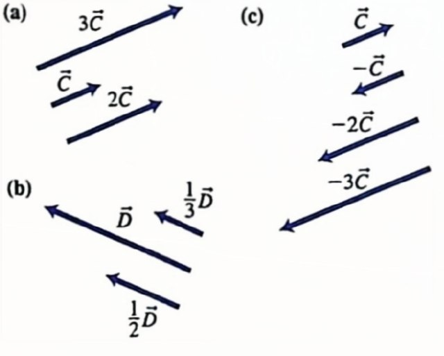
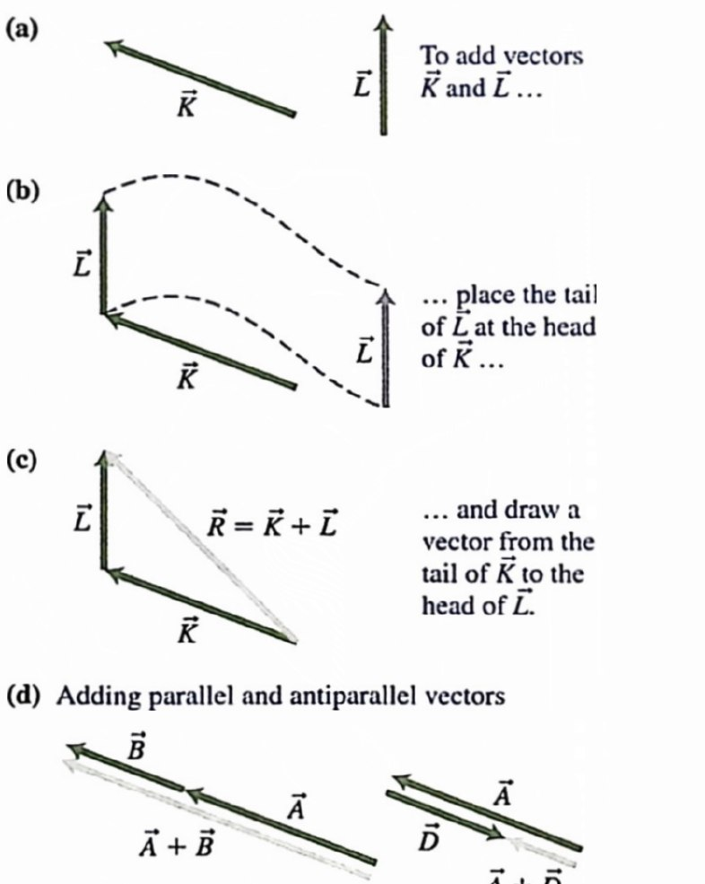
2.4 Quantities for describing motion
A motion diagram helps represent motion qualitatively. To analyze situations more precisely, for example, to determine how far a car will travel after the brakes are applied, we need to describe motion quantitatively. In this section, we devise some of the quantities we need to describe linear motion.
Time and time interval
People use the word “time” to mean the reading on a clock and how long a process takes. Physicists distinguish between these two meanings with different terms:
Time and time interval Time (clock reading) t is the reading on a clock or some other time-measuring instrument. Time interval (f2 — q) or At is the difference between two times. In the SI system (metric units), the unit of both time and time interval is the second. Other units are minutes, hours, days, and years. Time and time interval are both scalar quantities.
Position, displacement, distance, and path length
We also need to precisely define four quantities that describe the location and motion of an object:
Position, displacement, distance, and path length The position of an object is its location with respect to a particular coordinate system (usually indicated by x or y). The displacement of an object, usually indicated by d, is a vector that starts from an object’s initial position and ends at its final position. The magnitude (length) of the displacement vector is called the distance d. The path length I is how far the object moved as it traveled from its initial position to its final position. Imagine laying a string along the path the object took. The length of the string is the path length.
Figure 2.10a shows a car’s initial position x, at initial time q. The car first backs up (moving in the negative direction) toward the origin of the coordinate system at x = 0. The car stops and then moves in the positive x-direction to its final position Xf. Notice that the initial position and the origin of a coordinate system are not necessarily the same point! The displacement d for the whole trip is a vector that points from the starting position at Xj to the final position at Xf (Figure 2.10b). The distance for the trip is the magnitude of the displacement (always a positive value). The path length I is the distance from x, to 0 plus the distance from 0 to Xf (Figure 2.10c). Note that the path length does not equal the distance.
Scalar component of displacement for motion along one axis
To describe linear motion quantitatively we first specify a reference frame. For simplicity we can point one coordinate axis either parallel or antiparallel to the object’s direction of motion. For linear motion, we need only one coordinate axis to describe the object’s changing position. In the example of the car trip, at the initial time q the car is at position x(q), and at the final time tt the car is at x(q) (Figure 2.11). The notation x(t)
“I” I Sometimes we use the subscripts I II 1, 2, and 3 for times and the corresponding positions to communicate a sequence of different and distinguishable stages in any process, and sometimes we use the subscripts i (initial) and f (final) to communicate the sequence. Subscripts i and f mean the beginning and end of our observations, not the beginning and end of the process.
(a) Positive displacement when the person moves in the positive direction
(b) Negative displacement when the person moves in the negative direction
Significant digits
means the position x is a function of clock reading t (spoken “x of f”), not x multiplied by t. When we need to note a specific value of position x at a specific clock reading fr, instead of writing x(fi), we will write xlt keeping in mind that 1 is a shortcut for time rb The same applies to Xj, Xf, etc. The vector that points from the initial position x, to the
final position Xf is the displacement. The quantity that we determine through the operation xf — Xj is called the x-scalar component of the displacement vector and is abbreviated dx (usually we drop the term “scalar” and just call this the x-component of the displacement). Figure 2.12a shows that the initial position of person A is xA, = +3.0 m and the final position is xAf = +5.0 m; thus the x-component of the person’s displacement is
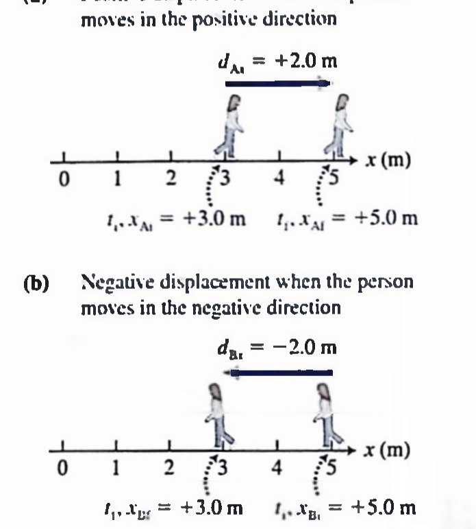
The displacement is positive since the person moved in the positive x-direction. In Figure 2.12b, person B moved in the negative direction from the initial position of +5.0 m to the final position of +3.0 m; thus the x-component of displacement of the person is
Distance is always positive, as it equals the absolute value of the displacement |xf — xj|. In the example above, the displacements for A and B are different, but the
Note that in Figure 2.12 the positions were written as +3.0 m and +5.0 m. Could we have written them instead as +3 m and +5 m, or as +3.00 m and +5.00 m? The thickness of a human body from the back to the front is about 0.2 m (20 cm). Thus, we should be able to measure the person’s location at one instant of time to within about 0.1 m but not to 0.01 m (1 cm). Thus, the locations can reasonably be given as +3.0 m, which implies an accuracy of ±0.1 m. (For more on significant digits, see Chapter 1.)
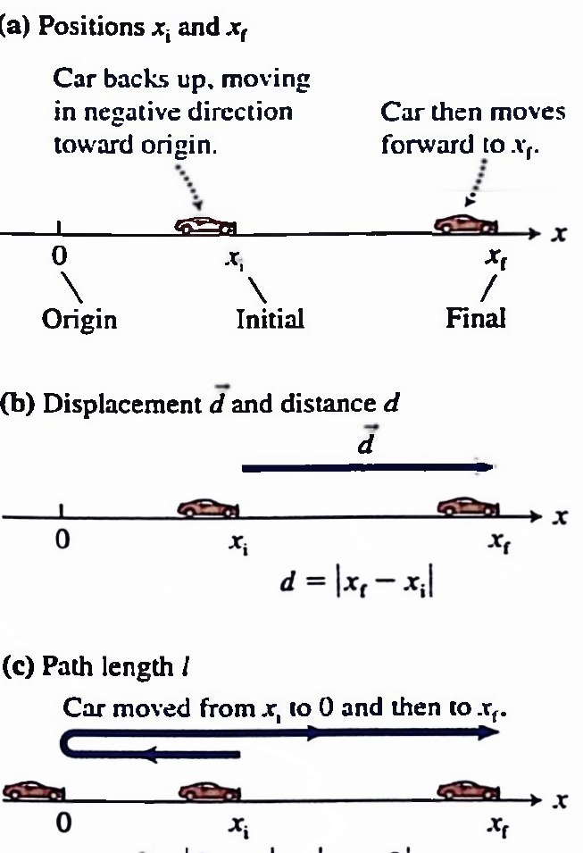
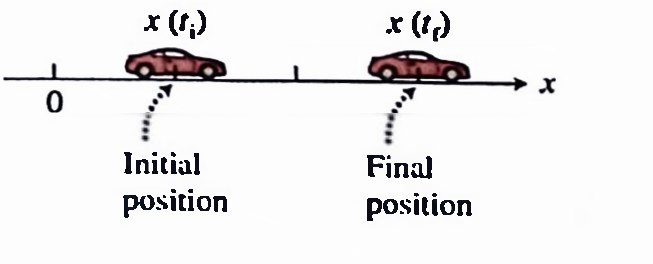
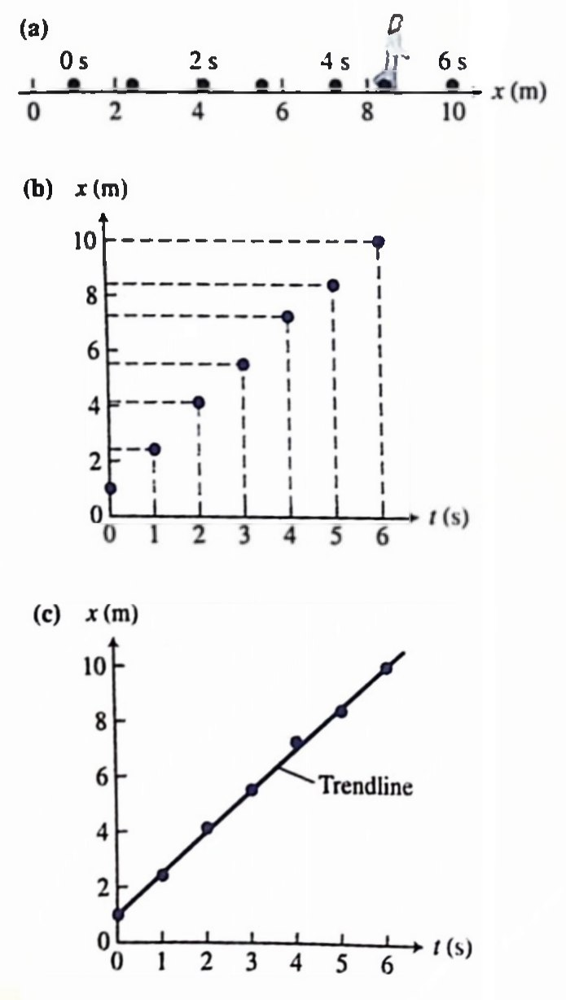
2.5 Representing motion with data tables and graphs
So far, we have learned how to represent linear motion with motion diagrams. In this section, we will learn to represent linear motion with data tables and graphs. Imagine your friend (the object of interest) walking across the front of your classroom. To record her position, you drop a beanbag on the floor at her position each second (Figure 2.13a). The floor is the object of reference. The origin of the coordinate system is 1.00 m from the first beanbag, and the position axis points in the direction of motion. Table 2.2 shows each bag’s position and the correspond ing clock reading. Do you see a pattern in the table’s data? One way to determine if there is a pattern is to plot the data on a graph (Figure 2.13b). This graph is called a kinematics position-versus-time graph. In physics, the word kinematics means description of motion. Kinematics graphs contain more precise information about an object’s motion than motion diagrams can.
Time t is usually considered to be the independent variable, as time progresses even if there is no motion, so the horizontal axis will be the /-axis. Position x is the depend ent variable (position changes with time), so the vertical axis will be the x-axis. Plot the data in each row in Table 2.2 on the axes. Each point on the horizontal axis represents a time (clock reading). Each point on the vertical axis represents the position of a beanbag. When we draw lines through these points and perpendicular to the axes, they intersect at a single location—a dot on the graph that simultane ously represents a time and the corresponding position of the object. This dot is not a location in real space but rather a representation of the position of the beanbag at a specific time. Is there a trend in the locations of the dots on the graph? We see that the position increases as the time increases. This makes sense. We can draw a smooth best-fit curve that passes as close as possible to the data points—a trendline (Figure 2.13c). It looks like a straight line in this particular case—the position is linearly dependent on time.
Correspondence between a motion diagram and position-versus-time graph
To understand how graphs relate to motion diagrams, consider the motion represented by the data in Table 2.2 and in Figure 2.13c. Figure 2.14 shows a modified motion diagram for the data in Table 2.2 (the dot times are shown and the Av arrows have been removed for simplicity) and the corresponding position-versus-time graph. The position of each dot on the motion diagram corresponds to a point on the position axis. The graph line combines the information about the position of an object and the clock reading when this position occurred. Note, for example, that the t = 4.0 s dot on the motion diagram at position x = 7.26 m is at 7.26 m on the position axis. The corre sponding dot on the graph is at the intersection of the vertical line passing through 4.0 s and the horizontal line passing though 7.26 m.
The role of a reference frame
Always keep in mind that representations of motion (motion diagrams, tables, kine matics graphs, equations, etc.) depend on the reference frame chosen. Let’s look at the representations of the motion of a cyclist using two different reference frames.
Two observers each use different reference frames to record the chang ing position of a bicycle rider. Both reference frames use Earth as the object of reference, but the origins of the coordinate systems and the directions of the x-axes are different. The data for the cyclist’s trip are
t0 = 0.0 s x0 = 40.0 m fl = 1.0 s xi= 30.0 m t2 = 2.0 s x2 = 20.0 m t3 = 3.0 s x3 = 10.0 m t4 = 4.0 s x4 = 0.0 m
t0 = 0.0 s Xq = 1.00 m rt = 1.0 s X! = 2.42 m = 2.0 s x2 = 4.13 m t3 = 3.0 s x3 = 5.52 m t4 = 4.0 s x4 = 7.26 m ts = 5.0 s xs — 8.41 m t6 = 6.0 s x6 — 10.00 m
“I—1 The quantity that appears on I I I the vertical axis of a graph can represent the position of an object whose actual position is changing along any axis. The position on the vertical axis does not mean the object is moving in the vertical direction.
Os 2s 4s 6s •—> •=> •—► •—> ► J----- 1----- 1----- 1----- 1----- 1-----U41----- 1----- 1-----L>x(m) 0 1 2 3 4 5 6- 7 8 9 10
presented in Table 2.3 for observer 1 and in Table 2.4 for observer 2. Sketch a motion diagram and a position-versus-time graph for the motion when using each reference frame.
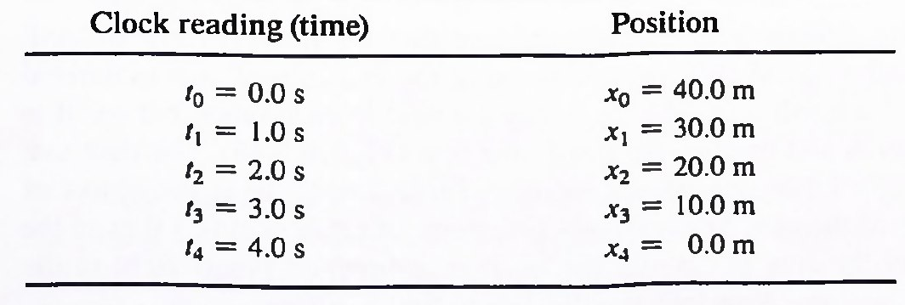
t0 = 0.0 s Xq = 0.0 m /i = 1.0 s Xj = 10.0 m fe —2.0 s x2 = 20.0 m t3 = 3.0 s *3 = 30.0 m t4 = 4.0 s x4 = 40.0 m
(CONTINUED)
Sketch and translate According to Table 2.3, the observer in refer ence frame 1 sees the cyclist (the object of interest) at time to — 0.0 s at position Xo = 40.0 m and at = 4.0 s at position x4 = 0.0 m. Thus, the cyclist is moving in the negative direction relative to the coordinate axis in reference frame 1. Meanwhile, according to Table 2.4, the ob server in reference frame 2 sees the cyclist at time t0 = 0.0 s at position
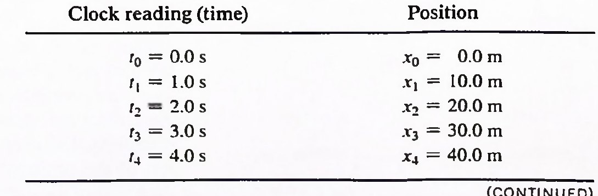
,r0 = 0.0 m and at time r4 = 4.0 s at position x4 = 40.0 m. Thus, the cyclist is moving in the positive direction relative to reference frame 2.
t4=4.0s t„ = 0.0s
Simplify and diagram Since the size of the cyclist is small com pared to the distance he is traveling, we can represent him as a point-like object The motion diagram for the cyclist is the same for both observ ers, as they are using the same object of reference. Using the data in the tables, we plot kinematics position-versus-time graphs for each observer at top right Although the graph for observer 1 looks very different from the graph for observer 2, they represent the same motion. The graphs look different because the reference frames are different
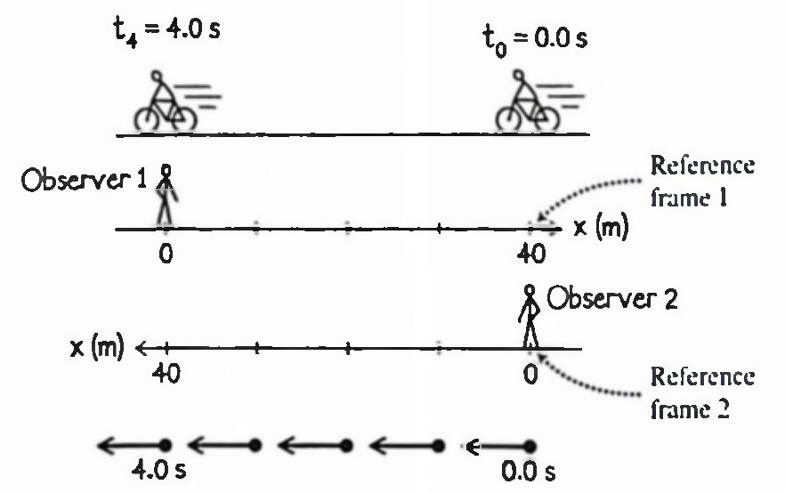
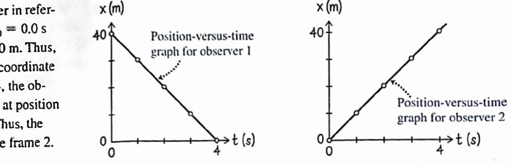
, »« . Finish r0 = 0.0 s t. = 5.0 s A A hne A A • ----- 1------ ---------------------- 1--------- x (m) 0 1 2 3 4 5 6 xM = 1.0 m xu = 3.5 m
Show answer
The point of reference could be another cyclist moving in the opposite direction from the direction in which the first cyclist is traveling, with each covering the same distance relative to the ground during the same time interval.
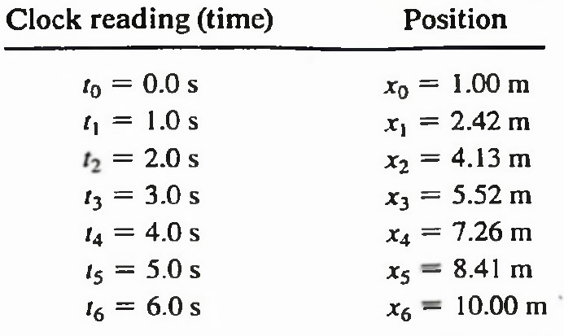
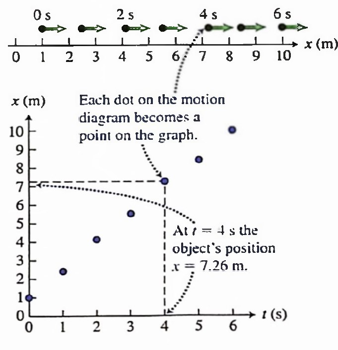
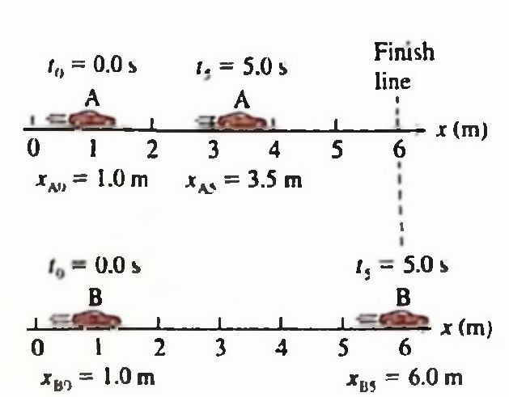
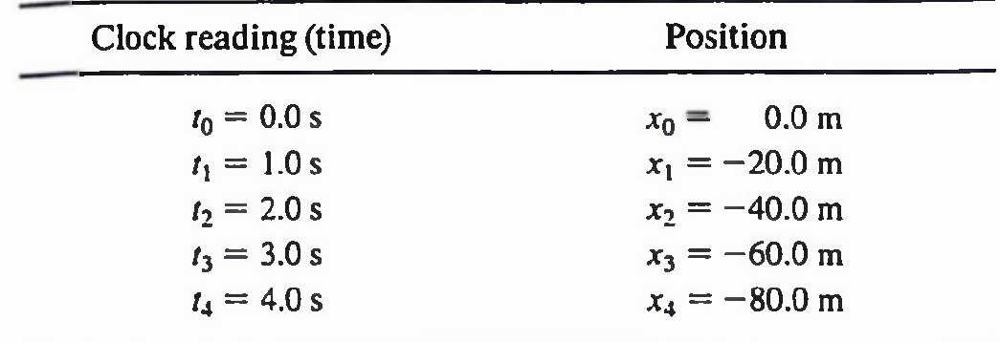
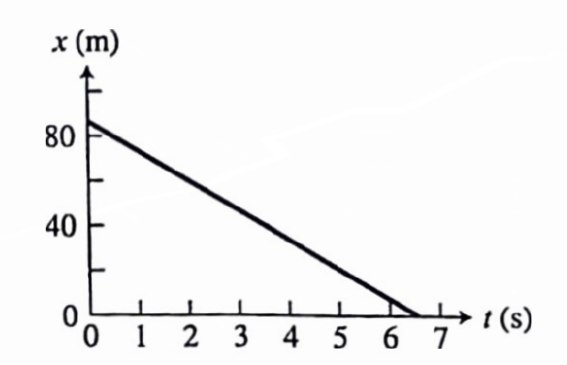
2.6 Constant velocity linear motion
In the last section we devised a graphical representation of motion. Here we will connect graphs to mathematical representations using the example of two motorized toy cars racing toward a finish line. At time 0 they are next to each other, but car B is moving faster than car A and reaches the finish line first (Figure 2.16). The data that we collect are shown in Observational Experiment Table 2.6. Earth is the object of reference. The origin of the coordinate system (the point of reference) is 1.0 m to the left of the position of the cars at z0 = 0. The positive x-direction points right in the direction of the cars’ motions. Now let’s use the data to find a pattern.
Graphing the motion of cars
Observational experiment
It looks like a straight line is the simplest reasonable choice for the best-fit curve in both cases (the data points do not have to be exactly on the line).
In Table 2.6, the slope of the line representing the motion of car B is greater than the slope of the line representing the motion of car A. What is the physical meaning of this slope? In mathematics the value of a dependent variable is usually written as y and depends on the value of an independent variable, usually written as x. A function y(x) = /(x) is an operation that one needs to do to x as an input to have y as the output. For a straight line, the function y(x) is y(x) = mx + b, where m is the slope and b is the y-intercept—the value of the y when x = 0. In the case of the cars, the independent variable is time t and the dependent variable is position x. The equation of a straight line becomes x(t) = mt + b, where b is the x-intercept of the line, and m is the slope of the line. The x-intercept is the x-position when t = 0, also called the initial position of the car xq. Both cars started at the same location: xAq — *bo = 1-0 m. To find the slope m of a straight line, we can choose any two points on the line and divide the change in the vertical quantity (Ax in this case) by the change in the horizontal quantity (At in this case):
For example, for car A the slope of the line is
The slope of the line for car B is
6.0m - 1.0m , , , mn -- ----------------------- ' — +1.0 m/s B 5.0 s - 0.0 s '
Now we have all the information we need to write mathematical equations that describe the motion of each of the two cars:
Notice that the units of the slope are meters per second. The slope indicates how the object’s position changes with respect to time. The slope of the line contains more information than just how fast the car is going. It also tells us the direction of motion relative to the coordinate axis.
Analysis
We graph the data with the goal of finding a pattern. The trendlines for both cars are straight lines. The line for car B has a bigger angle with the time axis than the line for car A.
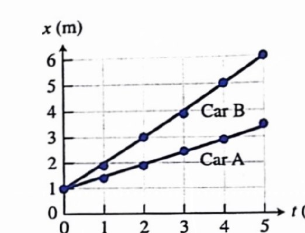
Pattern
The position- versus-time graph for car C has negative slope. positive slope.
T” I D Equation (2.1) allows you to use I I I any change in position divided by the time interval during which that change occurred to obtain the same number—as long as the position-versus-time graph is a straight line (the object is moving at constant velocity). Later in the chapter, you will learn how to modify this equation for cases in which the velocity is not constant.
Consider the motions represented graphically in Figure 2.17a. The slope of the position-versus-time graph for car C is +20 m/s, but the slope of the position-versus- time graph for car D is -20 m/s. What is the significance of the minus sign? Car C is moving in the positive direction, but car D is moving in the negative direction (check the motion diagrams in Figure 2.17b). The magnitudes of the slopes of their position-versus-time graphs are the same, but the signs are different. Thus, in addition to the information about how fast the car is traveling (its speed), the slope tells in what direction it is traveling. Together, speed and direction are called velocity, and this is what the slope of a position-versus-time graph represents. You are already familiar with the term “velocity arrow” used on motion diagrams. Now you have a formal definition for velocity as a physical quantity.
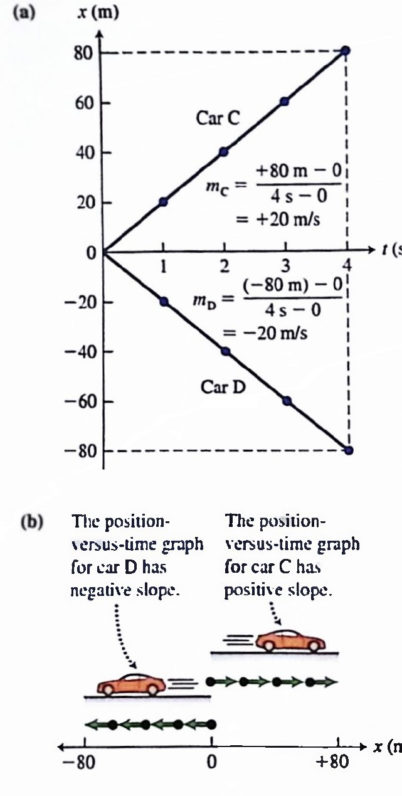
Velocity and speed for constant velocity linear motion For constant velocity linear motion, the component of velocity vx along the axis of motion can be found as the slope of the position-versus-time graph or the ratio of the component of the displacement of an object x2 — X] during any time interval f2 —
where the subscript x next to the v symbol indicates the direction of the axis and tj and r2 are the two clock readings when the positions X| and x2 were measured. Examples of units of velocity are m/s, km/h, and mi/h (which is often written as mph). Speed is the magnitude of the velocity and is always a positive number.
Note that velocity is a vector quantity. In vector form, motion at constant velocity is v = a/At, where d is the displacement vector and At is the time interval. Here we divide a vector by a scalar. You learned this operation in Section 2.3. The velocity vector has the same direction as the displacement vector (direction of motion), but the mag nitude is different as well the units. The magnitude of the velocity vector is speed. The displacement vector has units of length (m), and the time interval has units of time (s). Thus the velocity vector has the units of m/s. Since it is difficult to operate mathemat ically with vectors, we will work with components. When the velocity vector points in the positive direction of the x-axis, the x-component of velocity is equal to the magni tude of the velocity vector. When the velocity vector points in the negative direction of the axis, the x-component of velocity is equal to the magnitude of the velocity vector with the negative sign.
Equation of motion for constant velocity linear motion
We can rearrange Eq. (2.1) into a form that allows us to determine the position of an object at time r2 knowing only its position at time t| and the x-component of its velocity: x2 = X] + vx(t2 — ti). If we apply this equation for time 0 (to = 0) when the initial position is xq, then the position x at any later position time t can be written as follows:
Position equation for constant velocity linear motion
where x is the function x(/), position x0 is the position of the object at time t0 = 0 with respect to a particular reference frame, and the (constant) x-component of the velocity of the object vx is the slope of the position-versus-time graph.
Below you see a new type of task—a Quantitative Exercise. Quantitative Exercises in clude two steps of the problem-solving process: “Represent mathematically” and “Solve and evaluate.” Their purpose is to help you practice using new equations right away.
A cyclist
In Conceptual Exercise 2.3, you constructed graphs for the motion of a cyclist using two different reference frames. Now construct mathemat ical representations (equations) for the cyclist’s motion for each of the two graphs. Do the equations indicate the same position for the cyclist at time t = 6.0 s?
Represent mathematically The cyclist moves at constant velocity; thus the general mathematical description of his motion is x — x0 + v^r, where
Solve and evaluate Using the graph for reference frame 1 in Conceptual Exercise 2.3, we see that the cyclist’s initial position is
xq = +40 m. The velocity along the x-axis (the slope of the graph) is
The minus sign indicates that the velocity points in the negative x-direction (toward the left) relative to that axis. The motion of the bike with respect to reference frame 1 is described by the equation
Using the graph for reference frame 2, we see that the cyclist’s initial position is Xq = 0 m. The x-component of the velocity along the axis of motion is
The positive sign indicates that the velocity points in the positive x-direction (toward the left). The motion of the bike relative to reference frame 2 is described by the equation
Below you see another new type of task—a worked example. The worked examples include all four steps of the problem-solving strategy we use in this book. (See Chapter 1
for descriptions of these steps.)
Your young sister is running at 2.0 m/s toward a mud puddle that is 6.0 m in front of her. You are 10.0 m behind her running at 5.0 m/s to catch her before she jumps into the mud. Will she need a bath?
Sketch and translate We start by drawing a sketch of what is hap pening. Your sister and you are two objects of interest. Next, we choose a reference frame with Earth as the object of reference. The origin of the coordinate system is your initial position and the positive direction is toward the right, in the direction that you both run, as shown at right. Notice the subscripts for the given quantities. The first subscript
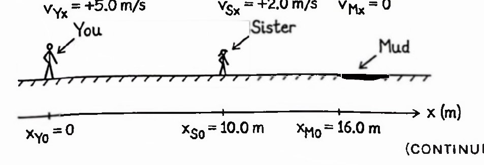
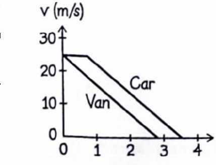
The position of the cyclist at time /| = 6s with respect to reference frame 1 is
With respect to reference frame 2:
How can the position of the cyclist be both —20 m and +60 m? Remember that the description of motion of an object depends on the reference frame. If you put a dot on coordinate axis 1 at the —20 m position and a dot on coordinate axis 2 at the +60 m position, you find that the dots are in fact at the same location, even though that loca tion corresponds to a different position in each reference frame. Both descriptions of the motion are correct and consistent, but each one is meaningful only with respect to the corresponding reference frame.
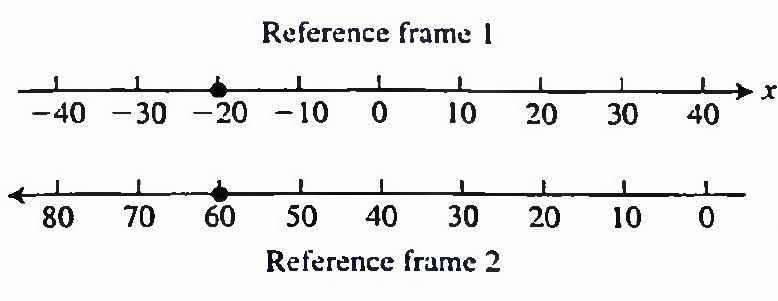
_1-------- 1------- *------- 1-------- 1-------- 1-------- 1-------- 1--------i_>x(m) -40 -30 -20 -10 0 10 20 30 40
x(m) +—1-------- 1------- 4------- 1-------- 1-------- 1-------- 1-------- 1-------- 1— 80 70 60 50 40 30 20 10 0
Show answer
x = (0 m) + (−20 m/s)t. The observer is moving with respect to Earth at the same speed in the direction opposite to the cyclist.
indicates the object, and the second indicates the time. For example, Xyo means your position at the zero clock reading.
X>ft) = 0 --------- 1------------------------ *---------------> x(m) Xs0=10.0m xMo=16.0 m (CONTINUED)
We can now mathematically describe the positions and velocities of you and your sister at the beginning of the process. The initial clock reading is zero at the moment that you are at the origin. Note that you were both running before time zero: this just happened to be the time when we started analyzing the process. We want to know the time when you and your sister are at the same position. This will be the position where you catch up to her.
Simplify and diagram We assume that you and your sister are point like objects. To sketch graphs of the motions, find your sister’s position at 1 s by multiplying her speed by 1 s and adding it to her initial posi tion. Do this for 2 and 3 s as well. Plot these values on a graph for the corresponding clock readings (1 s, 2 s, 3 s, etc.) and draw a line that extends through these points. Repeat this process for yourself.
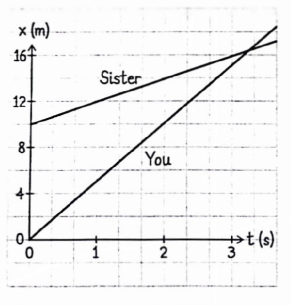
Represent mathematically Use Eq. (2.2) to construct mathemat ical representations of motion. The form of the equation is the same for both (x = Xq + v?); however, the values for the initial positions and the components of the velocities along the axis for your sister, xs = x$o + vs?, and for you, xY = xY0 + vy?, are different Now we can use the values of the quantities from the sketch.
From the graphs, we see that the distance between you and your sister is shrinking with time. Do the equations tell the same story? For example, at time t — 2.0 s, your sister is at position
and you are at
You are catching up to your sister.
Solve and evaluate The time t at which the two of you are at the same position can be found by setting xs(r) = xY(r):
Rearrange the above to determine the time t when you are both at the same position:
The 3.33333333 s number produced by our calculator has many more significant digits than the givens. Should we round it to have the same number of significant digits as the given quantities? The rule of thumb is that if it is the final result, you need to round this number to 3.3, as the answer cannot be more precise than the given information. However, we do not round the result of an intermediate calculation. We use the result as is to calculate the next quantity needed to get the final answer and then round the final result.
Note that if you used the rounded number 3.3 s, you would get 16.6 m for your sister and 16.5 m for you. These numbers are slightly smaller than the result calculated above. However, for our purposes it does not matter, as the goal of this example was to decide if you could catch your sister before she reaches the puddle. Since you caught her at a position of about 16.7 m, with the uncertainty of about 0.1 m, this position is slightly greater than the 16.0-m distance to the puddle. Therefore, your sister reaches the puddle before you and will indeed need a bath. This answer seems consistent with the graphical representation of the motion shown above. Note that we used the symbol t to denote the specific clock reading when you catch your sister. Often, the same symbol is used to denote both a variable and some specific value. Always ask yourself what a symbol means when you read it.
Show answer
With respect to this reference frame, your sister is at position 0 and at rest; you are initially at −10.0 m and moving toward your sister with velocity +3.0 m/s; and the mud puddle is initially at +6.0 m and moving toward your sister with velocity −2.0 m/s.
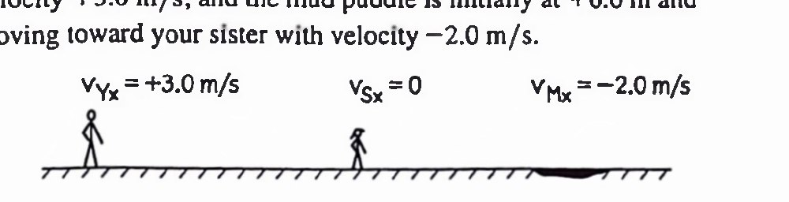
(Ul) X <---------------1------------------------ 1-------------------------------------1------
TIP: In the reference frame we chose in Example 2.5, the positions of you and your I 11 sister are always positive, as are the components of your velocities. Also,
your initial position is zero. Thus the calculations are the easiest. Often the description of the motion of object(s) will be simplest in one particular reference frame. There is not one general rule for finding such a frame; however, it is helpful to consider which frame will result In positive values for the most quantities.
Graphing velocity
So far, we have learned to make position-versus-time graphs. We could also construct a graph of an object’s velocity as a function of time. Consider Example 2.5, in which you chase your sister. Again we will use Earth as the object of reference. You are moving at a constant velocity whose x-component is vx = +5.0 m/s. For your sister, the x-component of velocity is +2.0 m/s. We place clock readings on the horizontal axis and the x-component of your and your sister’s velocities on the vertical axis; then we plot points for these velocities at each time (see Figure 2.18a). The best-fit curve for each person is a horizontal straight line, which makes sense since neither velocity is changing. For you, the equation of the best-fit line is vYx(t) = +5.0 m/s, and for your sister, it is v$x(0 = +2.0 m/s, where vx(r) represents the x-component of veloc ity as a function of time. If instead we choose your sister as the object of reference, her velocity with respect to herself is zero, so the best-fit curve is again a horizontal line but at a value of 0.0 m/s instead of +2.0 m/s; your velocity is +3.0 m/s (see Figure 2.18b); and the mud’s velocity is —2.0 m/s. The minus sign indicates that from your sister’s point of view, the mud is moving in the negative direction toward her at speed +2.0 m/s.
Finding displacement from a velocity graph
We have just learned to construct a velocity-versus-time graph. Can we get anything more out of such graphs besides being able to represent velocity graphically? As you know, for constant velocity linear motion, the position of an object changes with time according to x = x0 + vj. Rearranging this equation a bit, we get x — x0 = vj, where t is the time interval during which the motion occurred, assuming that the motion started at zero clock reading (t0 = 0). The left side is the displacement of the object from time zero to time t. Now look at the right side: vx is the vertical height of the velocity-versus-time graph line and t is the horizontal width from time zero to time t (see Figure 2.19). We can interpret the right side as the shaded area between the velocity-versus-time graph line and the time axis. In equation x — Xq = v^r, this area (the right side) equals the displacement of the object from time zero to time t on the left side of the equation. Here the displacement is a positive number because we chose an example with positive velocity. Let’s extend this reasoning to more general cases: an object initially at position xt at time t] and later at position X2 at time t2 and moving in either the positive or negative direction.
Displacement is the area between a velocity-versus-time graph line and the
time axis For motion with constant velocity, the magnitude of the displacement X2 — X] (the distance traveled) of an object during a time interval from to t2 is the area between a velocity-versus-time graph line and the time axis between those two clock readings. The displacement is the area with a plus sign when the velocity is positive and the area with a negative sign when velocity is negative.
Use the velocity-versus-time graphs shown in Figure 2.18a for you and your sister (see Example 2.5) to find your displacements with respect to Earth for the time interval from 0 to 3.0 s. The velocity components relative to Earth are +2.0 m/s for your sister and +5.0 m/s for you.
Represent mathematically For constant velocity motion, the object’s displacement x — x0 is the area of a rectangle whose vertical
TIP: Notice that a horizontal line on a position-versus-time graph means that the object is at rest (the position is constant with time). A horizontal line on a velocity-versus-time graph means that the object is moving at constant velocity (its velocity does not change with time).
side equals the object’s velocity y, and whose horizontal side equals the time interval t — to = t — 0 during which the motion occurred.
Solve and evaluate The displacement of your sister heading toward the mud puddle during the 3.0-s time interval is the product of her velocity and the time interval:
(CONTINUED)
She was originally at position 10.0 m, so she is now at position (10.0 + 6.0) m = + 16.0 m. Your displacement during that same 3.0-s time interval is the product of your velocity and the time interval:
You were originally at 0.0 m, so you are now at +15.0 m. 1.0 m behind your sister.
TIP: Sometimes we use average speed instead of average velocity. To
find the average speed divide the total path length by the time of travel. If the object is not changing its direction of motion, the average speed is equal to the magnitude of the average velocity.
Acceleration
Show answer
Your sister's values are dS = 4.0 m and xS = 14.0 m, and your values are dY = 10.0 m and xY = 10.0 m. She is 4.0 m ahead of you at that time.
In the last section, the function vx(f) was a horizontal line on the velocity-versus-time graph because the velocity was constant. How would the graph look if the velocity were changing? One example of such a graph is shown in Figure 2.20. A point on the curve indicates the velocity of the object shown on the vertical axis at a particular time shown on the horizontal axis. In this case, the velocity is continually changing and is positive.
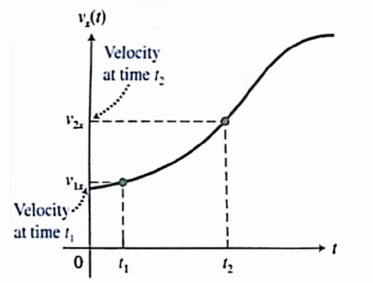
Instantaneous velocity and average velocity
The velocity of an object at a particular time is called the instantaneous velocity. Figure 2.20 shows a velocity-versus-time graph for motion with continually changing instantaneous velocity. When an object’s velocity is changing, we cannot use Eq. (2.1) to determine its instantaneous velocity using any time interval and a corresponding position change, because the ratio
is not the same for different time intervals the way it was when the object was moving at constant velocity. We can still use this equation to determine the average velocity, which is the ratio of the change in position and the time interval during which this change occurred. For motion at constant velocity, the instantaneous and average velocity are equal; for motion with changing velocity, they are not. However, if the two points chosen are very close together, Ax and At are both very small, but the ratio Ax/Ar is not necessarily large or small. In fact, within a vanishingly small time interval, we can use Ax/Ar as the definition of the x-component of instantaneous velocity. When an object moves with changing velocity, its velocity can change quickly or slowly. To characterize the rate at which the velocity of an object is changing, we need a new physical quantity.
Let’s start with a simple experiment. We take a metal ball and drop it onto a foam block that deforms when touched. The photos in Figure 2.21 show that the dent in the block becomes deeper when the ball is dropped from a larger height. Can this result be due to a change in the velocity of the ball as it is falling? That is, does a longer fall mean a
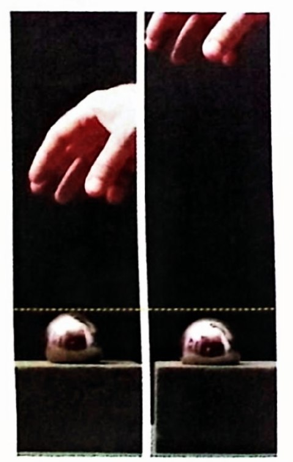
greater velocity and thus a bigger dent? We need to collect data to answer this question. The first two rows of Table 2.7 show position and time data for the falling ball:
From the table you can see that the distance that the ball travels during each successive time interval increases; Figure 2.22 shows the position of the ball every 0.100 s. If the distance that the ball travels during each successive interval increases, the velocity must increase, too. To determine the average velocity during each time in terval, we calculate the displacement of the ball between consecutive times and then di vide by the time interval. For example, the average velocity between 0.100 s and 0.200 s is (0.196 m — 0.049 m)/(0.200 s — 0.100 s) = 1.47 m/s; it is positive because we pointed the axis down. We can think of this average velocity as the instantaneous veloc ity that the ball had in the middle of the time interval—in this case, the 0.150 clock read ing. We can now put these calculated velocities vav and the associated clock readings t* in the middle of each time interval in the two bottom rows of the table. These data now allow us to plot a velocity-versus-time graph (Figure 2.23). Notice that the best-fit curve for these data is a straight line. This occurs when the velocity of the object increases or decreases at a constant rate, that is, by the same amount during the same time interval. In our case, the velocity increases by 9.8 m/s every second in the downward direction.
The physical quantity that characterizes how fast instantaneous velocity is changing is equal to the slope of the velocity-versus-time graph and is called acceleration a. The vector symbol above this quantity indicates that it has direction, communicated by the sign of the slope of the velocity-versus-time graph for one-dimensional motion. Similar to velocity, the acceleration of an object moving in a straight line along an x-coordinate axis is defined as
We see that the units of acceleration based on the definition of acceleration are (m/s)/s = m/(s · s) = m/s².
In the case of a small falling ball, we found that its acceleration is about 9.8 m/s2, which means that its velocity increases by 9.8 m/s every second. To better understand acceleration, think of a cyclist and a car riding along a road at increasing speeds (Figures 2.24a and b, on the next page). The accelerations of both objects are constant (as seen from the analysis of the slopes of their velocity-versus-time graphs) but not the same; the car has a greater acceleration. If the car were slowing down,
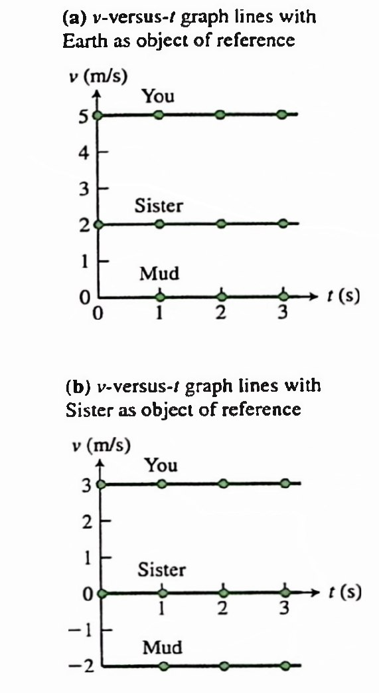
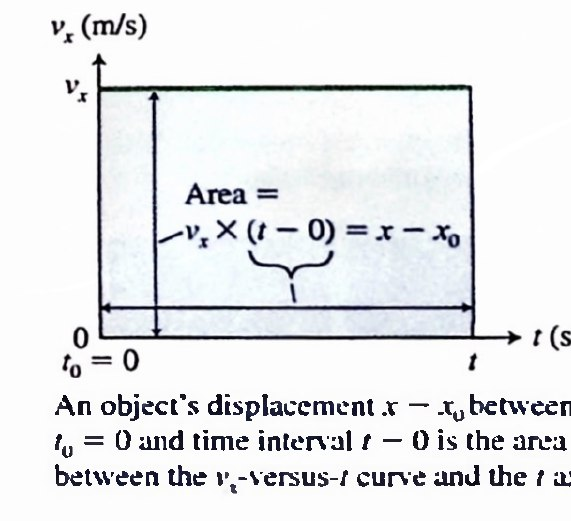
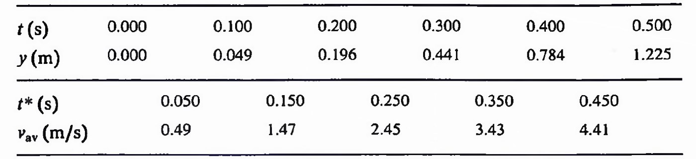
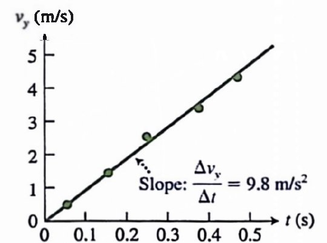
2.7 Motion at constant acceleration
The velocity is in the positive direction v« (v, > 0 and is above the t axis). The acceleration is negative (a, < 0) since v, is decreasing and its v4(r) graph has a negative slope.
The velocity is in the negative direction (below the t axis). The acceleration is / negative (a, < 0) since v, is increasing in the negative direction and its >>,(/) graph has a negative slope.
its velocity-versus-tune graph would instead have a negative slope, which corresponds to a decreasing speed and a negative acceleration, as vj, is smaller than vlx (Figure 2.24c). However, it is not necessary for an object moving with negative acceleration to be slow ing down. Examine Figure 2.24d. The car has a negative acceleration and it is speeding up! This happens when the object is moving in the negative direction and has a negative component of velocity, but its speed in the negative direction is increasing in magnitude. Because velocity is a vector quantity and the acceleration shows how quickly the velocity changes as time progresses, acceleration is also a vector quantity. We can define acceleration in a more general way. The average acceleration of an object during a time interval is the following:
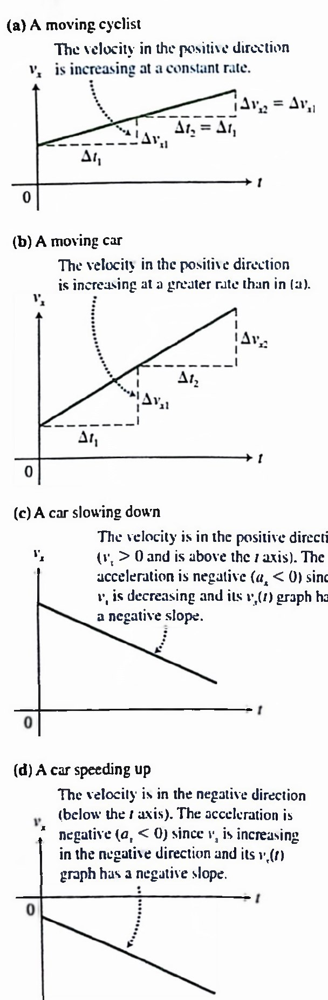
To determine the acceleration, we need to determine the velocity change vector Av = i»2 — Vp This equation involves the subtraction of vectors, but you can think of it in terms of addition by rearranging it to be v i + Av = v2. Note that A v is the vector that we add to to get v2 (Figure 2.25). We did this when making motion diagrams in Section 2.3, only then we were not concerned with the exact lengths of the vectors. The acceleration vector a = Av/At is in the same direction as the velocity change vector Av, as the time interval Ar is a scalar quantity. The units of the acceleration vector are determined by dividing the units of the velocity change vector by the units of time.
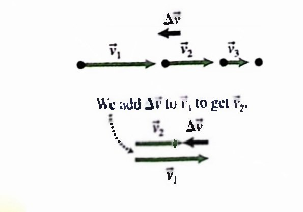
Acceleration An object’s average acceleration during a time interval Ar is the change in its velocity Av divided by that time interval:
If Ar is very small, then the acceleration given by this equation is the instantaneous acceleration of the object. For one-dimensional motion, the component of the average acceleration along a particular axis (for example, for the x-axis) is
The units of acceleration are (m/s)/s = m/s2.
Note that if an object has an acceleration of +6 m/s2, it means that its velocity changes by +6 m/s in 1 s, or by+12 m/s in 2 s [(+12m/s)/(2s) = +6 m/s2]. It is possible for an object to have a zero velocity and nonzero acceleration—for example, at the moment when an object starts moving from rest. An object can also have a nonzero velocity and zero acceleration—for example, an object moving at constant velocity. Note that the acceleration of an object depends on the observer. For example, a car is accelerating for an observer on the ground but is not accelerating for the driver of that car.
~T~ I D lf il is f°r y°u t0 think about velocity and acceleration in abstract — I II terms, try calculating the acceleration for simple integer velocities.
Determining velocity change from acceleration
If, at t0 = 0 for linear motion, the x-component of the velocity of some object is vqx and its acceleration ax is constant, then its velocity vx at a later time t can be determined by substituting these quantities into Eq. (2.4):
Rearranging, we get an expression for the changing instantaneous velocity of the object as a function of time:
Here the value of the velocity at any clock reading is the instantaneous velocity. For one-dimensional motion, the directions of the vector components ax, v„ and vox are indicated by their signs relative to the axis of motion—positive if in the positive x-direction and negative if in the negative x-direction.
Suppose that you are sitting on a bench watching someone riding a bicycle on a flat, straight road. In a 2.0-s time interval, the velocity of the bicycle changes from —4.0 m/s to —7.0 m/s. Describe the motion of the bicycle as fully as possible.
Sketch and translate We can sketch the process as shown below. The bicycle (the object of interest) is moving in the negative direction with respect to the chosen reference frame. The components of the bicycle’s velocity along the axis of motion are negative: vqj = —4.0 m/s at time t0 = 0.0 s and vx = —7.0 m/s at t = 2.0 s. The speed of the bicycle (the magnitude of its velocity) increases. It is moving faster in the negative direction. We can determine the acceleration of the bicycle and describe the changes in its velocity.
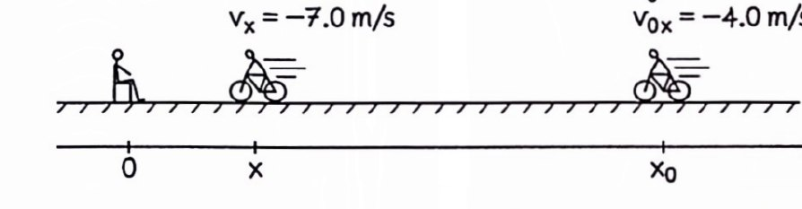
Simplify and diagram Our sketch of the motion diagram for the bi cycle is shown below. Note that Av points in the negativex-direction.
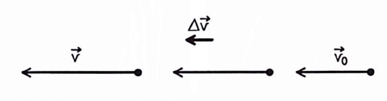
~T~ I It is possible for an object to have a positive acceleration and be slowing I I I down as well as to have a negative acceleration and be speeding up. When an object is speeding up, the acceleration vector is in the same direction as the velocity vector, and the velocity and acceleration components along the same axis have the same sign. When an object is slowing down, the acceleration is in the opposite direction relative to the velocity; their components have opposite signs.
Free fall
Let’s return to the example that led us to the “discovery” of acceleration: dropping a metal ball onto a foam block (Figure 2.21). Galileo Galilei (1564—1642) did experi ments similar to ours in which he dropped objects from different heights and examined the resulting dents in sand. However, he also noticed that objects of different shapes fall differently—for example, a piece of paper falls more slowly than a heavy brick. He hypothesized that this difference was due to air resistance. If his hypothesis were correct, then in a vacuum (space devoid of air), all objects would fall with the same acceleration. Indeed, in a large vacuum chamber, when a light feather and a heavy apple fall, they are always next to each other, meaning that they have the same velocity and acceleration at every instant (Figure 2.26). You can perform this testing experiment.
Represent mathematically We apply Eq. (2.4) to determine the
acceleration:
(-7.0 m/s) - (-4.0 m/s) , a, -----------------------------------------= —1.5 m/s * 2.0s-0.0s
Solve and evaluate Substituting the given velocities and times, we get
The bicycle’s x-component of velocity at time 0 was —4.0 m/s. Its velocity was changing by— 1.5 m/s each second. So 1 s later, its velocity was
During the second 1-s time interval, the velocity changed by another
— 1.5 m/s and was then (—5.5 m/s) + (—1.5 m/s) = (—7.0 m/s). In this example, the bicycle was speeding up by 1.5 m/s each second in the negative direction.
Show answer
The car's velocity in the positive x-direction is decreasing. After 3 s, vx = 5.0 m/s.
ball.
y Going up Going don n
i
J----- '----- 1-----
i at the highest point -9.8
write
too: take a heavy ball and a tennis ball, drop them at the same time from a height of about 2 m, and videotape the process. You will see them moving side by side! Earlier in this section we found that the acceleration of the falling metal ball was about 9.8 m/s2. At the same location, without air resistance, all falling objects will have
this same acceleration; however, at another location on Earth, the value of acceleration might be slightly different. We will leam why in Chapter 5. If we videotape a small object thrown upward and then use the data to construct a velocity-versus-time graph, we find that its acceleration is still the same at all clock readings. For an upward-pointing axis, the object’s acceleration is -9.8 m/s2 on the way up, -9.8 m/s2 on the way down, and even -9.8 m/s2 at the instant when the object
is momentarily at rest at the highest point of its motion. At all times during the object’s flight, its velocity is changing at a rate of -9.8 m/s each second. A motion diagram and the graphs representing the position-versus-time, velocity-versus-time, and accel- eration-versus-time are shown in Figure 2.27. The positive direction is up. Notice that when the object is at its maximum height on the position-versus-time graph, the veloc ity is instantaneously zero (the slope of the position-versus-time graph is zero). The acceleration is never zero, even at the moment when the velocity of the object is zero. It might be tempting to think that at the instant an object is not moving, its acceler ation must be zero. This is only true for an object that is at rest and remains at rest. In the case of an object thrown upward, if its acceleration at the top of the flight is zero, it would never descend (it would remain at rest at its highest point). The motion described above is called a free fall. Free fall is an example of a sim plified model of motion in which we assume that there is no air or any other medium affecting the motion of a dropped or thrown (upward or downward) object. All objects in free fall have the same acceleration. We will leam the explanation for this phenom enon in Chapter 3. Note that physicists use the term free fall even when the object is moving up.
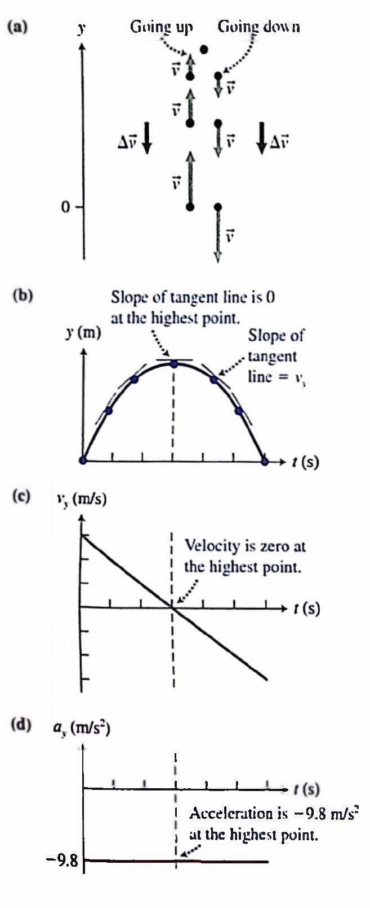
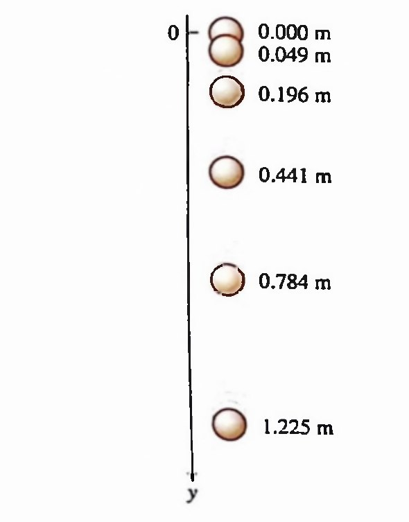
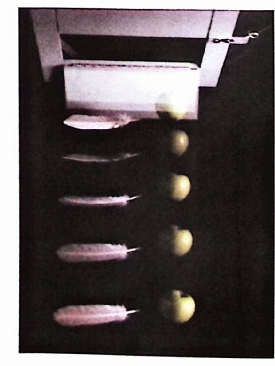
2.8 Displacement of an object moving at constant acceleration
Equation (2.2) allows us to predict the location of an object moving at constant velocity at any time if we know its velocity and initial position. Can we construct a similar equa tion for an object moving at constant acceleration? Suppose that at time zero an object is passing the mark x0 on the axis of motion traveling at velocity v0 and acceleration ax. Where will the object be after the time interval t — 0 — tl To answer this question, we can use the concept of average velocity. If we know the object’s average velocity and initial position, and we assume that the object is moving at this velocity during the time interval of interest, we can predict the position at any time using Eq. (2.2), x = x0 + v„xt. The average velocity is
where, according to Eq. (2.5), instantaneous velocity is vx = vOx + axl- Thus we can
Vavx— 2 2 2
Therefore, the position of the accelerating object at any time is
(The symbol means that this equation follows from the previous equation.) Does the above result make sense? Consider a limiting case, for example, when the object is traveling at a constant velocity (when ax — 0). In this case the equa tion should reduce to the result from our investigation of linear motion with constant velocity (x = xq + vxot). It does. We can also check the units of each term in this equation for consistency (when terms in an equation are added or subtracted, each of those terms must have the same units). Each term has units of meters, so the units also check.
Position of an object during linear motion with constant acceleration For any initial position xq at clock reading to = 0, we can determine the position x of an object at any later time t, provided we also know the initial velocity vqx of the object and its constant acceleration ax: x = x0 + VQxf + ^axt2 (2.6)
Since t2 appears in Eq. (2.6), the position-versus-time graph for this motion is not a straight line but a parabola (a parabola is a graph for a quadratic function) (Figure 2.28a). Unlike the position-versus-time graph for constant velocity motion where Ax/At is the same for any time interval, the position-versus-time graph for accelerated motion is not a straight line; it does not have a constant slope. At different times, the change in position Ax has a different value for the same time interval Ar (Figure 2.28b). The line tangent to the position-versus-time graph at a particular time has a slope Ax/ Ar that equals the velocity vx of the object at that time. The slopes of the tangent lines at different times for the graph in Figure 2.28b differ—they are greater when the position changes more during the same time interval. The next example involves vertical motion. Thus, we will use a vertical y-coordinate axis and apply the equations of motion.
A woman jumps off a large boulder. She is moving at a speed of about 5 m/s when she reaches the ground. Estimate her acceleration during landing. Indicate any other quantities you use in the estimate.
Sketch and translate To solve the problem, we assume that the woman’s knees bend while landing so that her body travels 0.4 m closer to the ground compared to the standing upright position. That is, 0.4 m is the stopping distance for the main part of her body. At right we have sketched the initial and final situations during the landing. We choose the central part of her body as the object of interest. We use a vertical reference with a y-axis pointing down and the final location of the central part of her body as the origin of the coordinate axis. The initial values of her motion at the time t0 = 0 when she first touches the ground are y0 = —0.4 m (the central part of her body is 0.4 m in the negative direction above her final position) and vq^ = +5 m/s
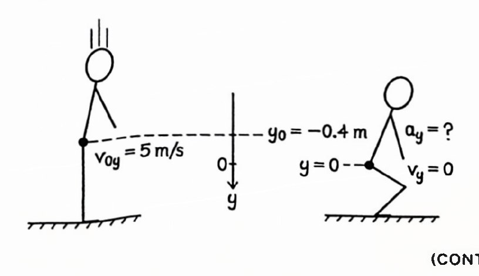
T” I Q You can only add or subtract physical I I I quantities that have the same units. The result has the same units as those two quantities. When you multiply or divide quantities, you make a new physical quantity whose units are the result of multiplication or division of the original quantities.
(she is moving downward, the positive direction relative to the y-axis). The final values at some unknown time t at the instant she stops are y = 0 and v = 0. Note: It is important to have a coordinate axis and the initial and final values with appropriate signs.
(CONTINUED)
Simplify and diagram The motion diagram at right represents her motion while stopping, assuming constant acceleration. We cannot model the woman as a point-like object in this situation, so we focus on the motion of her midsection.
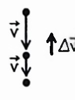
Represent mathematically The challenge in representing this situation mathematically is that there are two unknowns: the magnitude of her acceleration ay (the unknown we wish to determine) and the time interval t between when she first contacts the ground and when she comes to rest However, both Eqs. (2.5) and (2.6) describe linear motion with constant acceleration and have ay and t in them. Since we have two equations and two unknowns, we can handle this challenge by solving
vz - Vo,. t -------------- fly
and substitute it into rearranged Eq. (2.6):
The result is:
. fl>(Vy - Vq,)2
Using algebra, we can simplify the above equation:
+ (V2 - 2VyV0y + V^)
V? " v0y
Solve and evaluate Now we can use the previous equation to find
her acceleration:
(0)2-(5m/s)2 ,, = —=------------------rr = —31 m/s •* —30 m/s 2[0-(-0.4m)] ' '
Is the answer reasonable? The sign is negative. This means that the acceleration points upward, as does the velocity change arrow in the motion diagram. This is correct. The units for acceleration are correct. We cannot judge yet if the magnitude is reasonable. We will learn later that it is. The answer has one significant digit, as it should—the same as the information given in the problem statement.
Show answer
(a) ay would be half the magnitude; (b) ay would be four times the magnitude.
2(y-y0)
decide how the acceleration would change if (a) the stopping distance doubles and (b) the initial speed doubles. Note that the final velocity is Vy=0.
In the “Represent mathematically” step above, we developed a new mathematical relation that is useful when you do not know the time of travel. You do not need to memorize it, but it can come in handy when you solve problems.
A useful equation for linear motion with constant acceleration for situations in which you do not know the time interval during which the changes in position and velocity occurred:
Figure 2.29 shows a different way to derive Eq. (2.6): using the velocity-versus- time graph. Examine the four parts of the figure carefully. You can use the idea of the displacement as the area between the constant velocity graph and the time axis as the starting point for this derivation (Figure 2.29a). Breaking the time axis into small intervals allows us to consider the velocity for those time intervals as constant and to apply the method we used in Figure 2.19 (Figure 2.29b). The result is that the displacement is the area of a trapezium (Figure 2.29c), which can be broken up into two easy-to-calculate areas (Figure 2.29d).
2.9 Skills for analyzing situations involving motion
To help analyze physical processes involving motion, we will represent processes in multiple ways: the words in the problem statement, a sketch, one or more diagrams, possibly a graph, and a mathematical description. Different representations have to agree with each other; in other words, they need to be consistent.
Motion at constant velocity
You stand on a sidewalk and observe two friends walking at constant velocity. At time 0 Jim is 4.0 m east of you and walking away from you at speed 2.0 m/s. Also at time 0, Sarah is 10.0 m east of you and walk ing toward you at speed 1.5 m/s. Represent their motions with an initial sketch, with motion diagrams, and mathematically.
Sketch and translate We choose Earth as the object of refer ence with your position as the reference point. The positive direc tion points to the east. We have two objects of interest here: Jim and Sarah. Jim’s initial position is Xq = +4.0 m and his constant velocity is = +2.0 m/s. Sarah’s initial position is Xo = +10.0 m and her
constant velocity is V, = -1-5 m/s (the velocity is negative since she is moving westward). In our sketch we are using capital letters to repre sent Sarah and lowercase letters to represent Jim.
(CONTINUED)
Simplify and diagram We can model both friends as point-like objects since the distances they move are somewhat greater than their own sizes. The motion diagrams below represent their motions.
------------------------------------------------------------> X
Represent mathematically Now construct equations to represent Jim's and Sarah's motion:
Jim: x = +4.0 m + (2.0 m/s)t
Equation Jeopardy
The following equation describes an object’s motion:
Construct a sketch, a motion diagram, kinematics graphs, and a verbal description of a situation that is consistent with this equation. There are many possible situations that the equation describes equally well.
Sketch and translate This equation looks like a specific example of our general equation for the linear motion of an object with constant velocity: x = x0 + vj. The minus sign in front of the 3.0 m/s indicates that the object is moving in the negative x-direction. At time 0, the object is located at position x0 = +5.0 m with respect to some chosen object of reference and is already moving. Let's imagine that this chosen object of reference is a running person (the observer) and the equation represents the motion of a person (the object of interest) sitting on a bench as seen by the runner. The sketch below illustrates this possible scenario. The positive axis points from the observer (the runner) toward the person on the bench, and at time 0 the person sitting on it is 5.0 m in front of the runner and coming closer to the runner as time elapses.
The runner is the observer(object of reference). The person on the bench is the object of interest moving toward the runner.
Solve and evaluate We were not asked to solve for any quantity. We
will do it in the “Try it yourself” exercise.
Show answer
They are at the same position when t = 1.7 s and when x = X = 7.4 m.
Equation Jeopardy problems
Learning to read the mathematical language of physics with understanding is an impor tant skill. To help develop this skill, this text includes Jeopardy-style problems. In this type of problem, you have to work backwards: you are given one or more equations and are asked to use them to construct a consistent sketch of a process. You then convert the sketch into a diagram of a process that is consistent with the equations and sketch. Finally, you invent a word problem that the equations could be used to solve. Note that there are often many possible word problems for a particular mathematical description.
Simplify and diagram Model the object of interest as a point-like object. A motion diagram for the situation is shown below. The equal spacing of the dots and the equal lengths of velocity arrows both indicate that the object of interest is moving at constant velocity with respect to the observer.
Position-versus-time and velocity-versus-time kinematics graphs of the process are shown below. The position-versus-time graph has a con stant—3.0 m/s slope and a +5.0 m intercept with the vertical (position)
axis. The velocity-versus-time graph has a constant value (—3.0 m/s) and a zero slope (the velocity is not changing). The following verbal description describes this particular process: A jogger sees a person on
a bench in the park 5.0 m in front of him. The bench is approaching at a speed of 3.0 m/s as seen in the jogger’s reference frame. The direction pointing from the jogger to the bench is positive.
Show answer
An initial sketch for this process and a consistent motion diagram are shown below.
Construct an initial sketch and a motion diagram that are consistent with the equation and with the new observer and new object of reference.
Motion at constant nonzero acceleration
Now let’s apply some representation techniques to linear motion with constant (nonzero) acceleration.
A process is represented mathematically by the following equation:
Use the equation to construct an initial sketch, a motion diagram, and a verbal description of a process that is consistent with this equation.
Sketch and translate The above equation appears to be an applica tion of Eq. (2.6), which we constructed to describe linear motion with constant acceleration, if we assume that the 1.0 m/s2 in front of t2 is the result of dividing 2.0 m/s2 by 2:
It looks like the initial position of the object of interest is x0 = —60 m, its initial velocity is vOj = +10 m/s, and its acceleration is ax = +2.0 m/s2. Let’s imagine that this equation describes the motion of a car on a straight highway passing a van in which you, the observer, are riding. The car is 60 m behind you and moving 10 m/s faster than your van. The car speeds up at a rate of 2.0 m/s2 with respect to the van. The object of reference is you in the van; the positive direction is the direction in which the car and van are moving. A sketch of the situation follows.
Simplify and diagram The car can be considered a point-like object—much smaller than the dimensions of the path it travels. The
car’s velocity and acceleration are both positive. Thus, the car’s velocity in the positive x-direction is increasing as it moves toward the van (toward the origin). Below is a motion diagram for the car’s motion as seen from the van. The successive dots in the diagram are spaced increas ingly farther apart as the velocity increases; the velocity arrows are drawn increasingly longer. The velocity change arrow (and the acceleration) point in the positive x-direction, that is, in same direction as the velocity arrows.
Represent mathematically The mathematical representation of the situation appears at the start of the Equation Jeopardy example.
Solve and evaluate To evaluate what we have done, we can check the consistency (agreement) of the different representations. For example, we can check whether the initial position and velocity in the equation, the sketch, and the motion diagram are consistent In this case, they are.
Show answer
This mathematical representation could also describe the motion of a cyclist moving on a straight path as seen by a person standing on a sidewalk 60 m in front of the cyclist. The positive direction is in the direction the cyclist is traveling. When the person starts observing the cyclist, she is moving at an initial velocity of v0x = +10 m/s and speeding up with acceleration ax = +2.0 m/s2.
car be able to stop before hitting the van?
Sketch and translate
• Sketch the situation described in the problem. Choose the object of interest.
• Include an object of reference and a coordinate system. Indicate the origin and the positive direction.
• Label the sketch with relevant information. • Identify the unknown that you need to find. Label it with a question mark on the sketch.
Simplify and diagram
• Decide how you will model each moving object (for example, as a point-like object).
• Can you model the motion as constant velocity or constant acceleration? • Draw motion diagrams and kinematics graphs if needed.
vehicle is shown at right.
The problem-solving strategy in this text uses multiple representations, an approach that was found to be extremely useful in helping solve physics problems. The complete problem-solving strategy for a particular type of problem will be presented along with an example at the side. Below, the problem-solving steps for kinematics (motion) prob lems are presented on the left side and illustrated on the right side. The content of this example is also very important: it shows why it is necessary to remain a safe distance behind the car in front of you when driving.
An accident involving tailgating
A car follows about two car lengths (10.0 m) behind a van. At first, both vehicles are trave ling at a conservative speed of 25 m/s (56 mi/h). The driver of the van suddenly slams on the brakes to avoid an accident, slowing down at 9.0 m/s2. The car driver’s reaction time is 0.80 s and the car’s maximum acceleration while slowing down is also 9.0 m/s2. Will the
Below we represent this situation for each vehicle (we have two objects of interest). We use capital letters to indicate quantities referring to the van and lowercase letters for quantities referring to the car. We use the coordinate system shown with the origin of the coordinates at the initial position of the car’s front bumper. The positive direction is in the direction of motion.
The process starts when the van starts braking. The van moves at constant negative acceler ation throughout the entire process. We separate the motion of the car into two parts: (1) its motion before the driver applies the brakes (constant positive velocity) and (2) its motion after the driver starts braking (constant negative acceleration).
We model each vehicle as a point-like object, but since we are trying to determine if they collide, we need to be more specific about their positions. The position of the car is the position of its front bumper. The position of the van is the position of its rear bumper. We look at the motion of each vehicle separately. If the car’s final position is greater than the van's final position, then a collision has occurred at some point during their mo tion. Assume that the vehicles have constant acceleration so that we can apply our model of motion with constant acceleration. A velocity-versus-time graph line for each
Represent mathematically
o Use the sketch(es), motion diagram(s), and kinematics graph(s) to construct a mathematical representation (equations) of the process. Be sure to consider the sign of each quantity.
using Eq. (2.7):
Solve and evaluate
• Solve the equations to find the answer to the question you are investigating. • Evaluate the results to see if they are reasonable. Check the units and decide if the calculated quantities have reasonable values (sign, magnitude). Check limiting cases: examine whether the final equation leads to a reasonable result if one of the quantities is zero or infinity. This strategy applies when you derive a new equation while solving a problem.
Equation (2.7) can be used to determine the distance the van travels while stopping:
The car Part 1 Since the car is initially traveling at constant velocity, we use Eq. (2.2). The subscript 0 indicates the moment the driver sees the van start slowing down. The subscript 1 indicates the moment the car driver starts braking.
The car Part 2 After applying the brakes, the car has an acceleration of—9.0 m/s2. The
subscript 2 indicates the moment the car stops moving. We represent this part of the motion
The last step came from inserting the result from Part 1 for Xp
The van’s initial velocity is Vo = +25 m/s, its final velocity is Vx = 0, and its acceleration is A = —9.0 m/s2. Its initial position is two car lengths in front of the front of the car, so Xo = 2 X 5.0 m = 10 m. The final position of the van is
The car’s initial position is x0 = 0, its initial velocity is Vo, = 25 m/s, its final velocity is = 0, and its acceleration when braking is ax = —9.0 m/s2. The car’s final position is
The car will stop about 10 m beyond where the van will stop. There will be a collision between the two vehicles.
This analysis illustrates why tailgating is such a big problem. The car traveled at a 25-m/s constant velocity during the relatively short 0.80-s reaction time. During the same 0.80 s, the van’s velocity decreased by (0.80 s)(—9.0 m/s2) = 7.2 m/s from 25 m/s to about
18 m/s. So the van was moving somewhat slower than the car when the car finally started to brake. Since they were both slowing down at about the same rate, the tailgating vehicle’s velocity was always greater than that of the vehicle in front until they hit.
Show answer
The rear car should be at least 30 m behind the front car.
Mike says that its original position is (-48 m) and its acceleration is (-2.0 m/s2). Do you agree? If yes, explain why; if not, explain how to correct his answer.
Summary
A reference frame consists of an object of reference, a point of reference on that object, a coordinate system whose origin is at the point of reference, and a clock (Section 2.1)
Time or clock reading t (a scalar quan tity) is the reading on a clock or another time measuring instrument. (Section 2.4)
Time interval Ar (a scalar quantity) is the difference of two times. (Section 2.4)
Position x (a scalar quantity) is the location of an object relative to the chosen origin. (Section 2.4)
Displacement d is a vector drawn from the initial position of an object to its final position. The x-component of the displacement dx is the change in position of the object along the x-axis. (Section 2.4)
Distance d (a scalar quantity) is the magnitude of the displacement and is always positive. (Section 2.4)
Path length I is the length of a string laid along the path the object took. (Section 2.4)
Velocity v (a vector quantity) is the ratio of the displacement of an object during a time interval to that time interval. The velocity is instantane ous if the time interval is very small and average if the time interval is longer. (Section 2.6)
Speed v (a scalar quantity) is the magnitude of the velocity. (Section 2.6)
Acceleration a (a vector quantity) is the ratio of the change in an object's velocity Av during a time interval Ar to the time interval. The acceleration is instantaneous if the time interval is very small and average if the time interval is longer. (Section 2.7)
Motion with constant velocity or constant acceleration can be represented with a sketch. a motion diagram, kinematics graphs, and math ematically. (Sections 2.6—2.9)
For constant velocity linear motion,
Questions
Multiple Choice Questions
1. Match the general elements of physics knowledge (left) with the appropri ate examples (right).
Model of a process, Model of an object, Physical quantity, Physical phenomenon | Free fall, Acceleration, Rolling ball, Point-like object
(a) Model of a process—Acceleration; Model of an object—Point-like object; Physical quantity—Free fall; Physical phenomenon—Rolling ball. (b) Model of a process—Rolling ball; Model of an object—Point-like object; Physical quantity—Acceleration; Physical phenomenon—Free fall. (c) Model of a process—Free fall; Model of an object—Point-like object; Physical quantity—Acceleration; Physical phenomenon—Rolling ball.
2. Which group of quantities below consists only of scalar quantities? (a) Average speed, displacement, time interval (b) Average speed, path length, clock reading (c) Temperature, acceleration, position
3. Which of the following are examples of time interval? (1) I woke up at 7 a.m. (2) The lesson lasted 45 minutes. (3) Svetlana was bom on November
26. (4) An astronaut orbited Earth in 4 hours. (a) 1,2,3, and 4 (b) 2 and 4 (c) 2 (d) 4 (e) 3
4. A student said, “The displacement between my dorm and the lecture hall is
1 kilometer.” Is he using the correct physical quantity for the information provided? What should he have called the 1 kilometer? (a) Distance (b) Path length (c) Position (d) Both a and b are correct.
5. An object moves so that its position depends on time as x = +12 m — (4 m/s)r + (1 m/s2)r2. Which statement below is not true?
(a) The object is accelerating. (b) The speed of the object is always decreasing. (c) The object first moves in the negative direction and then in the positive direction. (d) The acceleration of the object is +2 m/s2. (e) The object stops for an instant at 2.0 s.
6. Choose the correct approximate velocity-versus-time graph for the follow ing hypothetical motion: a car moves at constant velocity, and then slows to a stop and without a pause moves in the opposite direction with the same acceleration (Figure Q2.6).
7. Figure Q2.7b shows the position-versus-time graph for a small red dot that was moving along the x-axis from point C at t = 0, as shown in Figure Q2.7a. Select the two answers that correctly describe the motion of the dot.
(a) (b) x
X«-l--------*--------1-------- 1-------- L. D C B 0 A
(a) At the velocity of the dot was zero. (b) At the speed of the dot was greatest (c) At the dot was at position D. (d) At t2 the dot was at position A. (e) At t2 the velocity of the dot was positive.
8. Oliver takes two identical marbles and drops the first one from a certain height. A short time later, he drops the second one from the same height. How does the distance between the marbles change while they are falling to the ground? Choose the best answer and explanation. (a) The distance increases because the first marble moves faster than the second marble at every instant of time. (b) The distance increases because the first marble moves with greater acceleration than the second marble. (c) The distance stays the same because both marbles are falling with the same acceleration. (d) The distance stays the same because the velocities of the marbles are equal at every instant of time.
9. Your car is traveling west at 12 m/s. A stoplight (the origin of the coordi nate axis) to the west of you turns yellow when you are 20 m from the edge of the intersection (see Figure Q2.9). You apply the brakes and your car's speed decreases. Your car stops before it reaches the stoplight What are the signs for the components of kinematics quantities?
(a) (b) (c) (d) (e)
10. Which velocity-versus-time graph in Figure Q2.10 best describes the motion of the car in the previous problem (see Figure Q2.9) as it approaches the stoplight?
11. Azra wants to determine the average speed of the high-speed train that operates between Paris and Lyon. Before she boards the train, she measures the length of the train L and the distance d between the electric line poles that are placed along the tracks. Which of the following procedures should
she use? (a) Divide the distance between the adjacent poles by 10 times the time
needed to pass 10 poles. (b) Divide the length of the train by 1/10 of the time needed to pass 10 poles. (c) Count how many poles the train passed in 10 s and divide this number by d · 10 s. (d) Count how many poles the train passed in 10 s and multiply this
number by pf;.
12. A sandbag hangs from a rope attached to a rising hot air balloon. The rope connecting the bag to the balloon is cut. How will two observers see the motion of the sandbag? Observer 1 is in the hot air balloon and observer 2 is on the ground? (a) Both 1 and 2 will see it go down. (b) 1 will see it go down and 2 will see it go up. (c) 1 will see it go down and 2 will see it go up and then down.
13. An apple falls from a tree. It hits the ground at a speed of about 5.0 m/s. What is the approximate height of the tree? (a) 2.5 m (b) 1.3 m (c) 10.0 m (d) 2.4 m
14. You have two small metal balls. You drop the first ball and throw the other one in the downward direction. Choose the statements that are not correct. (a) The second ball will spend less time in flight (b) The first ball will have a slower final speed when it reaches the
ground. (c) The second ball will have larger acceleration. (d) Both balls will have the same acceleration.
15. Which of the graphs in Figure Q2.15 represent the motion of an object that starts from rest and then, after undergoing some motion, returns to its initial position? Multiple answers could be correct
16. You throw a small ball upward and notice the time it takes to come back. If you then throw the same ball so that it takes twice as much time to come back, what is true about the motion of the ball the second time? (a) Its initial speed was twice the speed in the first experiment (b) It traveled an upward distance that is twice the distance of the origi nal toss. (c) It had twice as much acceleration on the way up as it did the first time. (d) The ball stopped at the highest point and had zero acceleration at
that point
Conceptual Questions
17. Figure Q2.17 shows vectors E, F, and G. Draw the following vectors using rules for graphical addition and subtraction: (a) E + F, (b) E-F, (c) E + G, (d) -G + F, _ (e) E + F+G,and (f) 2-P + G.
18. Peter is cycling along an 800-m straight stretch of a track. His speed is 13 m/s. Choose all of the graphical representations of motion from Figure Q2.18 that correctly describe Peter's motion.
19. In what reasonable ways can you represent or describe the motion of a car traveling from one stoplight to the next? Construct each representation for the moving car.
20. What is the difference between speed and velocity? Between path length and distance? Between distance and displacement? Give an example of each.
21. What physical quantities do we use to describe motion? What does each quantity characterize? What are their SI units?
22. Devise stories describing each of the motions shown in each of the graphs in Figure Q2.
22. Specify the object of reference.
23. For each of the position-versus-time graphs in Figure Q2.23, draw velocity-versus-time graphs and acceleration-versus-time graphs.
24. Figure Q2.24 shows velocity-versus-time graphs for two objects, A and B. Draw motion diagrams that correspond to the motion of these two objects.
25. Can an object have a nonzero velocity and zero acceleration? If so, give an example.
26. Can an object at one instant of time have zero velocity and nonzero acceleration? If so, give an example.
27. Your little sister has a battery-powered toy truck. When the truck is moving, how can you determine whether it has constant velocity, constant speed, constant acceleration, or changing acceleration? Explain in detail.
28. You throw a ball upward. Your friend says that at the top of its flight the ball has zero velocity and zero acceleration. Do you agree or disagree? If you agree, explain why. If you disagree, how would you convince your friend of your opinion?
Problems
Below, [BIO] indicates a problem with a biological or medical focus. Problems
labeled ask you to estimate the answer to a quantitative problem rather than derive a specific answer. Asterisks indicate the level of difficulty of the problem. Problems with no * are considered to be the least difficult. A single * marks moderately difficult problems. Two ** indicate more difficult problems.
1. A car starts at rest from a stoplight and speeds up. It then moves at constant speed for a while. Then it slows down until reaching the next stoplight. Repre sent the motion with a motion diagram as seen by the observer on the ground.
2. * You are an observer on the ground, (a) Draw two motion diagrams representing the motions of two runners moving at the same constant speeds in opposite directions toward you. Runner 1, coming from the east, reaches you in 5 s, and runner 2 reaches you in 3 s. (b) Draw a motion diagram for the second runner as seen by the first runner.
3. * A car is moving at constant speed on a highway. A second car catches up and passes the first car 5 s after it starts to speed up. Represent the situation with a motion diagram. Specify the observer with respect to whom you drew the diagram.
4. * A hat falls off a man's head and lands in the snow. Draw a motion diagram representing the motion of the hat as seen by the man.
5. Figure P2.5 shows several displacement vectors that are all in the (x, y) plane, (a) List all displacement vectors with a scalar component equal to
—2 units, (b) List all displacement vectors with a scalar compo nent equal to 0 units. (c) List all displace ment vectors that represent the distance traveled of 2 units. (d) Find three vectors that are related as X + Y = Z and three that are related as X — Y = Z.
Figure Q2.24 shows velocity-versus-time graphs for two objects, A and B. Draw motion diagrams that correspond to the motion of these two objects. Can an object have a nonzero velocity and zero acceleration? If so, give an example. Can an object at one instant of time have zero velocity and nonzero acceleration? If so, give an example. Your little sister has a battery-powered
24.
25.
26.
27.
toy truck. When the truck is moving, how can you determine whether it has constant velocity, constant speed, constant acceleration, or changing acceleration? Explain in detail. You throw a ball upward. Your friend says that at the top of its flight the ball has zero velocity and zero acceleration. Do you agree or disagree? If you agree, explain why. If you disagree, how would you convince your friend of your opinion?
28.
6. Figure P2.6 shows an incomplete motion diagram for an object, (a) For each pair of adjacent velocities, draw a corresponding Av vector. Use the grid to determine their lengths accurately, (b) Explain how to construct a Av vector by using the rule for addition of vectors and how to do it using the rule for subtraction of vectors.
7. * You drive 100 km east, do some sightseeing, and then turn around and drive 50 km west, where you stop for lunch, (a) Represent your trip with a displacement vector. Choose an object of reference and coordinate axis so that the scalar component of this vector is (b) positive; (c) negative; (d) zero.
8. * Choose an object of reference and a set of coordinate axes associated with it. Show how two people can start and end their trips at different locations but still have the same displacement vectors in this reference frame.
9. The scalar x-component of a displacement vector for a trip is —70 km. Represent the trip using a coordinate axis and an object of reference. Then change the axis so that the displacement component becomes +70 km.
10. * You recorded your position with respect to the front door of your house as you walked to the mailbox. Examine the data presented in Table 2.8 and answer the following questions: (a) What instruments might you have used to collect data? (b) Represent your motion using a position-versus-time graph, (c) Tell the story of your motion in words, (d) Show on the graph the displacement, distance, and path length.
t (s) 1 2 3 4 5 6 7 8 9
x (steps) 2 4 9 13 18 20 16 11 9
11. * You need to determine the time interval (in seconds) needed for light to pass an atomic nucleus. What information do you need? How will you use it? What simplifying assumptions about the objects and processes do you need to make? What approximately is that time interval?
12. A speedometer reads 65 mi/h. (a) Use as many different units as possible to represent the speed of the car. (b) If the speedometer reads 100 km/h, what
is the car's speed in mi/h?
13. Convert the following record speeds so that they are in mi/h. km/h, and m/s. (a) Australian dragonfly—36 mi/h: (b) the diving peregrine falcon— 349 km/h: and (c) the Lockheed SR-71 jet aircraft—980 m/s (about three
times the speed of sound).
14. Hair growth speed Estimate the rate that your hair grows in meters per second. Indicate any assumptions you made.
15. * A kidnapped banker looking through a slit in a van window counts her heartbeats and observes that two highway exits pass in 80 heartbeats. She knows that the distance between the exits is 1.6 km (1 mile), (a) Esti mate the van's speed, (b) Choose and describe a reference frame and draw a position-versus-time graph for the van.
16. * Some computer scanners scan documents by moving the scanner head with a constant speed across the document. A scanner can scan up to 30 pages per minute using an automatic paper feed tray. Estimate the maximum speed of the scanner head when scanning a standard letter sheet (21.59 cm X 27.94 cm). Indicate any assumptions that you made.
17. * Equation Jeopardy Two observers observe two different moving objects. However, they describe their motions mathematically with the same equa tion: x(r) = 10 km — (4 km/h)r. (a) Write two short stories about these two motions. Specify where each observer is and what she is doing. What is happening to the moving object at t = 0? (b) Use significant digits to deter mine the interval within which the initial position is known.
18. * Your friend's pedometer shows that he took 17,000 steps in 2.50 h during a hike. Determine everything you can about the hike. What assumptions did you make? How certain are you in your answer? How would the answer change if the time were given as 2.5 h instead of 2.50 h?
19. During a hike, two friends were caught in a thunderstorm. Four seconds after seeing lightning from a distant cloud, they heard thunder. How far away was the cloud (in kilometers)? Write your answer as an interval using significant digits as your guide. Sound travels in air at about 340 m/s.
20. Light travels at a speed of 3.0 X 108 m/s in a vacuum. The approximate distance between Earth and the Sun is 150 X 106 km. How long does it
take light to travel from the Sun to Earth? What are the margins within which you know the answer?
21. Proxima Centauri is 4.22 ± 0.01 light-years from Earth. Determine the length of 1 light-year and convert the distance to the star into meters. What is the uncertainty in the answer?
22. * Spaceships traveling to other planets in the solar system move at an average speed of 1.1 X 104 m/s. It took Voyager about 12 years to reach the
orbit of Uranus. What can you leant about the solar system using these data? What assumption did you make? How did this assumption affect the results?
23. *“ Figure P2.23 shows a velocity-versus-time graph for the bicycle trips of two friends with respect to the parking lot where they started. (a) Determine their displacements in 20 s. (b) If Xena's position at time zero is 0 and Gabriele's position is 60 m, what time interval is needed for Xena to catch Gabriele? (c) Use the information from (b) to write the
function x(0 for Gabriele with respect to Xena.
24. * Table 2.9 shows position and time data for your walk along a straight path, (a) Tell everything you can about the walk. Specify the object of ref erence. (b) Draw a motion diagram, draw a graph x(r), and write a function x(r) that is consistent with the data and the chosen reference frame.
25. * Table 2.10 shows position and time data for your friend's bicycle ride along a straight bike path, (a) Tell everything you can about his ride. Spec ify the observer, (b) Draw a motion diagram, draw a graph x(r), and write a function x(r) that is consistent with the ride.
26. * You are walking to your physics class at speed 1.0 m/s with respect to the ground. Your friend leaves 2.0 min after you and is walking at speed 1.3 m/s in the same direction. How fast is she walking with respect to you? How far does your friend travel before she catches up with you? Indicate the uncertainty in your answers. Describe any assumptions that you made.
27. * Gabriele enters an east-west straight bike path at the 3.0-km mark and rides west at a constant speed of 8.0 m/s. At the same time, Xena rides east from the 1.0-km mark at a constant speed of 6.0 m/s. (a) Write functions x(r) that describe their positions as a function of time with respect to Earth. (b) Where do they meet each other? In how many different ways can you solve this problem? (c) Write a function x(r) that describes Xena’s motion with respect to Gabriele.
28. * Jim is driving his car at 32 m/s (72 mi/h) along a highway where the speed limit is 25 m/s (55 mi/h). A highway patrol car observes him pass and quickly reaches a speed of 36 m/s. At that point, Jim is 300 m ahead of the patrol car. How far does the patrol car travel before catching Jim?
29. * You hike two-thirds of the way to the top of a hill at a speed of 3.0 mi/h and run the final third at a speed of 6.0 mi/h. What was your average speed?
30. * Olympic champion swimmer Michael Phelps swam at an average speed of 2.01 m/s during the first half of the time needed to complete a race. What was his average swimming speed during the second half of the race if he tied the record, which was at an average speed of 2.05 m/s?
31. * A car makes a 100-km trip. It travels the first 50 km at an average speed of 50 km/h. How fast must it travel the second 50 km so that its average speed is 100 km/h?
32. * Jane and Bob see each other when 100 m apart. They are moving toward each other, Jane at constant speed 4.0 m/s and Bob at constant speed 3.0 m/s with respect to the ground. What can you determine about this situation using these data?
33. * The graph in Figure P233 represents four different motions, (a) Write a function x(r) for each motion, (b) Use the information in the graph to determine as many quantities related to the motion of these objects as possible, (c) Act out these motions with two friends. (Hint: Think of what each object was doing at / — 0.)
34. A car starts from rest and reaches the speed of 10 m/s in 30 s. What can you determine about the motion of the car using this information?
35. A truck is traveling east at +16 m/s. (a) The driver sees that the road is empty and accelerates at +1.0 m/s2 for 5.0 s. What can you determine
about the truck's motion using these data? (b) The driver then sees a red light ahead and decelerates at —2.0 m/s2 for 3.0 s. What can you determine
about the truck's motion using these data? (c) Determine the values of the quantities you listed in (a) and (b).
36. Bumper car collision On a bumper car ride, friends smash their cars into each other (head-on), and each has a speed change of 3.2 m/s. If the mag nitudes of acceleration of each car during the collision averaged 28 m/s*, determine the time interval needed to stop and the stopping distance for each car while colliding. Specify your reference frame.
37. A bus leaves an intersection accelerating at +2.0 m/s2. Where is the bus after 5.0 s? What assumption did you make? If this assumption is not valid, would the bus be closer or farther away from the intersection compared to your original answer? Explain.
38. A jogger is running at +4.0 m/s when a bus passes her. The bus is accel erating from +16.0 m/s to +20.0 m/s in 8.0 s. The jogger speeds up with the same acceleration. What can you determine about the jogger's motion using these data?
39. * The motion of a person as seen by another person is described by the equation v = —3.0 m/s + (0.5 m/s2)r. (a) Represent this motion with a motion diagram and position-, velocity-, and acceleration-versus-time graphs, (b) Say everything you can about this motion and describe what happens to the person when his speed becomes zero.
40. While cycling at a speed of 10 m/s, a cyclist starts going downhill with an acceleration of magnitude 1.2 m/s2. The descent takes 10.0 s. What can
you determine about the cyclist's motion using these data? What assump- tions did you make?
41. * To his surprise, Daniel found that an egg did not break when he accidentally dropped it from a height of 0.40 m onto his floor, covered with 2.0-cm-thick carpet. Estimate the minimum acceleration of the egg while it was slowing down after touching the carpet Indicate any assumptions you made.
42. Squid propulsion Lolliguncitla brevis squid use a form of jet propulsion to swim—they eject water out of jets that can point in different directions, allowing them to change direction quickly. When swimming at a speed of 0.15 m/s or greater, they can accelerate at 1.2 m/s2. (a) Determine the time interval needed for a squid to increase its speed from 0.15 m/s to 0.45 m/s. (b) What other questions can you answer using the data?
43. Dragster record on the desert In 1977, Kitty O'Neil drove a hydrogen peroxide-powered rocket dragster for a record time interval (3.22 s) and final speed (663 km/h) on a 402-m-long Mojave Desert track. Determine her average acceleration during the race and the acceleration while stopping (it took about 20 s to stop). What assumptions did you make?
44. * Imagine that a sprinter accelerates from rest to a maximum speed of 10.8 m/s in 1.8 s. In what time interval will he finish the 100-m race if he keeps his speed constant at 10.8 m/s for the last part of the race? What assumptions did you make?
45. ** Two runners are running next to each other when one decides to speed up at constant acceleration a. The second runner notices the acceleration after a short time interval Ar when the distance between the runners is d. The second runner accelerates at the same acceleration. Represent their motions with a motion diagram and position-versus-time graph (both graph lines on the same set of axes). Use any of the representations to predict what will happen to the distance between the runners—will it stay d, increase, or decrease? Assume that the runners continue to have the same acceleration for the duration of the problem.
46. ♦ Meteorite hits car In 1992, a 14-kg meteorite struck a car in Peekskill, NY, leaving a 20-cm-deep dent in the trunk, (a) If the meteorite was mov ing at 500 m/s before striking the car, what was the magnitude of its accel eration while stopping? Indicate any assumptions you made, (b) What other questions can you answer using the data in the problem?
47. (jftSl Froghopper jump A spittlebug called the froghopper (Phiiaenus
spumarius) is believed to be the best jumper in the animal world. It pushes off with muscular rear legs for 0.0010 s, reaching a speed of 4.0 m/s. Determine its acceleration during this launch and the distance that the frog hopper moves while its legs are pushing.
48. Tennis serve The fastest server in women's tennis is Sabine Lisicki, who recorded a serve of 131 mi/h (211 km/h) in 2014. If her racket pushed on the ball for a distance of 0.10 m, what was the average acceleration of the ball during her serve? What was the time interval for the racket-ball contact?
49. * Shot from a cannon In 1998, David “Cannonball" Smith set the distance record for being shot from a cannon (56.64 m). During a launch in the can non's barrel, his speed increased from zero to 80 km/h in 0.40 s. While he was being stopped by the catching net, his speed decreased from 80 km/h to zero with an average acceleration of 180 m/s2. What can you determine
about Smith's flight using this information?
50. Col. John Stapp’s final sled run Col. John Stapp led the U.S. Air Force Aero Medical Laboratory's research into the effects of higher accelerations. On Stapp's final sled run, the sled reached a speed of 282.5 m/s (632 mi/h) and then stopped with the aid of water brakes in 1.4 s. Stapp was barely conscious and lost his vision for several days but recovered. Determine his acceleration while stopping and the distance he traveled while stopping.
51. * Sprinter Usain Bolt reached a maximum speed of 11.2 m/s in 2.0 s while running the 100-m dash, (a) What was his acceleration? (b) What distance did he travel during this first 2.0 s of the race? (c) What assumptions did you make? (d) What time interval was needed to complete the race, assuming that he ran the last part of the race at his maximum speed? (e) What is the total time for the race? How certain are you of the number you calculated?
52. ♦♦ Imagine that Usain Bolt can reach his maximum speed in 1.7 s. What should be his maximum speed in order to tie the 19.19-s record for the 200-m dash?
53. * A bus is moving at a speed of 36 km/h. How far from a bus stop should the bus start to slow down so that the passengers feel comfortable (a comfortable acceleration is 1.2 m/s*)?
54. * (Sul You want to estimate how fast your car accelerates. What infor
mation can you collect to answer this question? What assumptions do you need to make to do the calculation using the information?
55. * In your car, you covered 2.0 m during the first 1.0 s, 4.0 m during the second 1.0 s, 6.0 m during the third 1.0 s, and so forth. Was this motion at constant acceleration? Explain.
56. (a) Determine the acceleration of a car in which the velocity changes from —10 m/s to —20 m/s in 4.0 s. (b) Determine the car's acceleration if its velocity changes from —20 m/s to —18 m/s in 2.0 s. (c) Explain why the sign of the acceleration is different in (a) and (b).
57. You accidentally drop an eraser out the window of an apartment 15 m above the ground, (a) How long will it take for the eraser to reach the ground? (b) What speed will it have just before it reaches the ground? (c) If you multiply the time interval answer from (a) and the speed answer from (b), why is the result much more than 15 m?
58. * What is the average speed of the eraser in the previous problem from the instant it is released to the instant it reaches the ground?
59. You throw a tennis ball straight upward. The initial speed is about 12 m/s. Say everything you can about the motion of the ball. Is 12 m/s a realistic speed for an object that you can throw with your hands?
60. While skydiving, your parachute opens and you slow from 50.0 m/s to 8.0 m/s in 0.80 s. Determine the distance you fall while the parachute is opening. Some people faint if they experience acceleration greater than 5g (5 times 9.8 m/s2). Will you feel faint? Explain and discuss simplifying
assumptions inherent in your explanation.
61. * After landing from your skydiving experience, you are so excited that you throw your helmet upward. The helmet rises 5.0 m above your hands. What was the initial speed of the helmet when it left your hands? How long was it moving from the time it left your hands until it returned?
62. ♦ You are standing on the rim of a canyon. You drop a rock and in 7.0 s hear the sound of it hitting the bottom. How deep is the canyon? What assumptions did you make? Examine how each assumption affects the answer. Does it lead to a larger or smaller depth than the calculated depth? (The speed of sound in air is about 340 m/s.)
63. * You are doing an experiment to determine your reaction time. Your friend holds a ruler. You place your fingers near the sides of the lower part of the ruler without touching it. The friend drops the ruler without warning you. You catch the ruler after it falls 12.0 cm. What was your reaction time?
64. Cliff divers Divers in Acapulco fall 36 m from a cliff into the water. Estimate their speed when they enter the water and the time interval needed to reach the water. What assumption did you make? Does this assumption make the calculated speed larger or smaller than actual speed?
65. * Galileo dropped a light rock and a heavy rock from the Leaning Tower of Pisa, which is about 55 m high. Suppose that Galileo dropped one rock 0.50 s before the second rock. With what initial velocity should he drop the sec ond rock so that it reaches the ground at the same time as the first rock?
66. * A person holding a lunch bag is moving upward in a hot air balloon at a constant speed of 7.0 m/s. When the balloon is 24 m above the ground, she accidentally releases the bag. What is the speed of the bag just before it reaches the ground?
67. * A parachutist falling vertically at a constant speed of 10 m/s drops a penknife when 20 m above the ground. What is the speed of the knife just before it reaches the ground?
68. A diagram representing the motion of two cars is shown in Figure P2.
68. The number near each dot indicates the clock reading in seconds when the car passes that location, (a) Indicate times when the cars have the same speed, (b) Indicate times when they have the same position.
0 1 2 3 4 5 , • • • ■ »__ « • ••••• 0 1 2 3 4 5
Gar 1
Car 2
69. Use the velocity-versus-time graph lines in Figure P2.69 to determine the change in the position of each car from 0 s to 60 s. Represent the motion of each car mathematically as a function jr(r). Their initial positions are A (200 m) and B (-200 m).
v (m/s)
30
20
i i i r(s)
10
10 20 30 40 50 60
-10
-20
70. * An object moves so that its position changes in the following way: x = 10 m - (4 m/s)L (a) Describe all of the known quantities for this morion, (b) Invent a story for the motion, (c) Draw a position-versus-time graph, and use the graph to determine when the object reaches the origin of
the reference frame, (e) Act out the morion.
71. * While babysitting their younger brother, Chrisso and Devin are playing with toys. They notice that the squishy Piglet slows down in a repeatable way when they push it along the smooth wooden floor. They propose a hypothesis that the toy slows down with a constant acceleration, which does not depend on the toy’s initial velocity. For each of five different initial speeds, they measure the distance traveled by the toy from the time they stop pushing it to the time the toy stops moving, and they measure the corresponding time interval. Their data are presented below. Do the data support their hypothesis? Explain. If yes, determine the average acceleration of Piglet and the maximum speed with which Chrisso and Devin push Piglet.
Experiment # Distance (m) Time (s)
1 0.96 0.65
2 2.84 1.12
3 1.72 0.87
4 2.53 1.05
5 0.62 0.53
72. ** An object moves so that its position changes in the following way: ,r(r) = —100 m + (30 m/s)r + (3.0 m/s2)r2. (a) What kind of motion is
this (constant velocity, constant acceleration, or changing acceleration)? (b) Describe all of the known quantities for this motion, (c) Invent a story for the motion, (d) Draw a velocity-versus-time graph, and use it to de termine when the object stops, (e) Use equations to determine when and where it stops. Did you get the same answer using graphs and equations?
73. * The positions of objects A and B with respect to Earth depend on time as follows: x(r)A = 10.0 m — (4.0 m/s)r; x(r)B = —12 m + (6 m/s)r.
Represent their motions on a motion diagram and graphically (position- versus-time and velocity-versus-time graphs). Use the graphical representa tions to find where and when they will meet. Confirm the result with mathematics.
74. * Two cars on a straight road at time zero are beside each other. The first car, traveling at speed 30 m/s, is passing the second car, which is traveling at 24 m/s. Seeing a cow on the road ahead, the driver of each car starts to slow down at 6.0 m/s2. Represent the motions of the cars mathematically
and on a velocity-versus-time graph from the point of view of a pedestrian. Where is each car when it stops?
75. * Oliver drops a tennis ball from a certain height above a concrete floor. Figure P2.75 shows the velocity-versus-time graph of the ball’s motion from the moment the ball is released to the moment the ball reaches its maximum height after bouncing up from the floor, (a) How is the y-axis directed: up or down? (b) Determine the initial height from which the ball is released and the final height to which the ball bounces, (c) Determine the average speed of the ball during the downward morion.
t(s)
76. * Water striders
Water striders are insects that propel themselves on the surface of ponds by creating vortices in the water shed by their driving legs. The veloc- ity-versus-time graph of a 17-mm-long water strider that moved in a straight line was created from a video (Figure P2.76). The insect started from rest, sped up by taking two strides, and then slowed down until it stopped. Estimate (a) the maximum speed (in m/s), (b) the maximum acceleration (in m/s2), and (c) the total displacement (in m) of the water strider. Note that the velocity on the graph is given in units of length of water strider body per second.
77. You are traveling in your car at 20 m/s a distance of 20 m behind a car traveling at the same speed. The driver of the other car slams on the brakes to stop for a pedestrian who is crossing the street. Will you hit the car? Your reaction time is 0.60 s. The maximum acceleration of each car is 9.0 m/s2.
78. * You are driving a car behind another car. Both cars are moving at speed 80 km/h. What minimum distance behind the car in front should you drive so that you do not crash into the car's rear end if the driver of that car slams on the brakes? Indicate any assumptions you made.
79. * A driver with a 0.80-s reaction time applies the brakes, causing the car to have 7.0-m/s2 acceleration opposite the direction of motion. If the car is initially traveling at 21 m/s, how far does the car travel during the reaction time? How far does the car travel after the brakes are applied and while skidding to a stop?
80. ** Some people in a hotel are dropping water balloons from their open window onto the ground below. The balloons take 0.15 s to pass your 1.6-m-tall window. Where should security look for the raucous hotel guests? Indicate any assumptions that you made in your solution.
81. ** K5K°)'| ISSPl Avoiding Injury from hockey puck Hockey players wear protective helmets with facemasks. Why? Because the bone in the upper part of the cheek (the zygomatic bone) can fracture if the acceleration of a hockey puck due to its interaction with the bone exceeds 900g for a time lasting 6.0 ms or longer. Suppose a player was not wearing a facemask. Is it likely that the acceleration of a hockey puck when hitting the bone would exceed these numbers? Use some reasonable numbers of your choice and estimate the puck's acceleration if hitting an unprotected zygomatic bone.
82. ** Ijsffii) A bottle rocket bums for 1.6 s. After it stops burning, it continues moving up to a maximum height of 80 m above the place where it stopped burning. Estimate the acceleration of the rocket during launch. Indicate any assumptions made during your solution. Examine their effect.
83. * Data from state driver’s manual The state driver’s manual lists the reaction distances, braking distances, and total stopping distances for automobiles traveling at different initial speeds (Table 2.11). Use the data to determine the driver's reaction time interval and the acceleration of the automobile while braking. The numbers assume dry surfaces for passenger vehicles.
Speed (mi/h) Reaction distance (m) Braking distance (m) Total stopping distance (m)
20 7 7 14
40 13 32 45
60 20 91 111
84. ** Estimate the time interval needed to pass a semi-trailer truck on a highway. If you are on a two-lane highway, how far away from you must an approaching car be in order for you to safely pass the truck without colliding with the oncoming traffic? Indicate any assumptions used in your estimate.
85. * Car A is heading east at 30 m/s and Car B is heading west at 20 m/s. Suddenly, as they approach each other, they see a one-way bridge ahead. They are 100 m apart when they each apply the brakes. Car A’s speed decreases at 7.0 m/s each second and car B decreases at 9.0 m/s each second. Do the cars collide? Provide two solutions: one using equations and one using graphs.
Reading Passage Problems
Head injuries In sports A research group at Dartmouth College has de veloped a Head Impact Telemetry (HIT) System that can be used to collect data about head accelerations during impacts on the playing field. The researchers observed 249,613 impacts from 423 football players at nine colleges and high schools and collected collision data from participants in other sports. The ac celerations during most head impacts (>89%) in helmeted sports caused head accelerations less than a magnitude of400 m/s2. However, a total of 11 concus sions were diagnosed in players whose impacts caused accelerations between 600 and 1800 m/s2, with most of the 11 over 1000 m/s2.
86. Suppose that the magnitude of the head velocity change was 10 m/s. Which time interval for the collision would be closest to producing a possi ble concussion with an acceleration of 1000 m/s2? (a) Is (b) 0.1s (c) 10-2s (d) 10“’s (e) 10-4s
87. Using numbers from the previous problem, which answer is closest to the average speed of the head while stopping? (a) 50 m/s (b) 10 m/s (c) 5 m/s (d) 0.5 m/s (e) 0.1 m/s
88. Suppose the average speed while stopping was 4 m/s (not necessarily the correct value) and the collision lasted 0.01 s. Which answer is closest to the head’s stopping distance (the distance it moves while stopping)? (a) 0.04 m (b) 0.4 m (c) 4 m (d) 0.02 m (e) 0.004 m
89. Use Eq. (2.7) and the numbers from Problem 86 to determine which stopping distance is closest to that which would lead to a 1000 m/s2 head acceleration. (a) 0.005 m (b) 0.5 m (c) 0.1m (d) 0.01m (e) 0.05 m
90. Choose the changes in the head impacts that would reduce the acceleration during the impact.
1. A shorter impact time interval
2. A longer impact time interval
3. A shorter stopping distance
4. A longer stopping distance
5. A smaller initial speed
6. A larger initial speed (a) 1.4,6 (b) 1,3,5 (c) 1,4,5 (d) 2,4,5 (e) 2,4,6
Automatic sliding doors The first automatic sliding doors were described by Hero of Alexandria almost 2000 years ago. The doors were moved by hanging containers that were filled with water. Modern sliding doors open or close automatically. They are equipped with sensors that detect the proximity of a person and an electronic circuit that processes the signals from the sensors and drives the electromotor-based system that moves the doors. The sensors typically emit pulses of infrared light or ultrasound and detect the reflected pulses. By measuring the delay between emitted and received pulses, the system can determine the distance to the object from which the pulse was reflected. The whole system must be carefully designed to ensure safe and accurate functioning. Designers of such doors take into account several variables such as typical walking speeds of people and their dimensions.
91. How long does it take for the door to fully open? (a) 1.5s (b) 3s (c) 5.5s (d) 11 s
92. How long does it take for the door to close after it is opened? (a) 11 s (b) 8 s (c) 5.5s (d) 3s
93. A person is walking at constant speed of 1.15 m/s toward and through the sliding door. How far from the door is the person when the door starts closing? (a) 2.3 m (b) 4.3 m (c) 6.3 m (d) 8.3 m
94. What is the average opening speed of the door? (a) 0.1 m/s (b) 0.3 m/s (c) 0.6 m/s (d) 3.0 m/s
95. What is the maximum speed of the door? (a) 0.1 m/s (b) 0.3 m/s (c) 0.6 m/s (d) 3.0 m/s Let's try to learn more about automatic sliding doors by analyzing the motion of a single-side automatic sliding door when a person is walking through the door. Figure 2.30 shows the position-versus-time graph of the motion of the edge of the door (marked with a red cross in the photo) from the moment the door starts opening to when the door is closed while a person walks toward and through the door. The doors are adjusted to start opening when a person is 2.0 m away.
96. A 50-cm-wide person is walking toward the door. What is the maximum walking speed of the person that will allow her to pass through the door without hitting it (assume the person aims for the opening)? (a) 0.6 m/s (b) 1.2 m/s (c) 1.7 m/s (d) 2.5 m/s